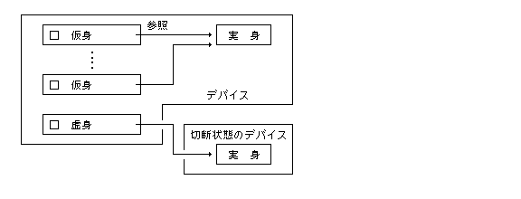
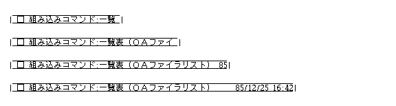
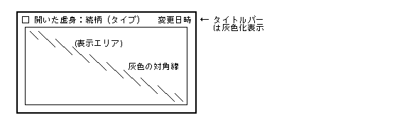
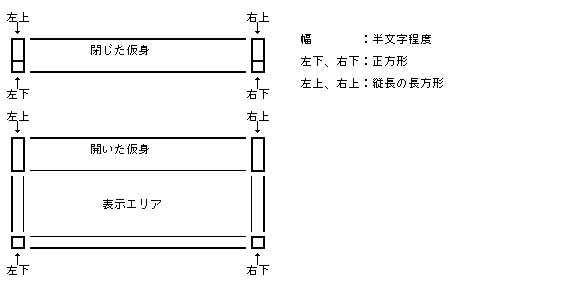
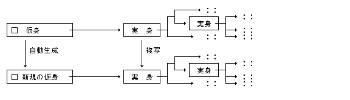
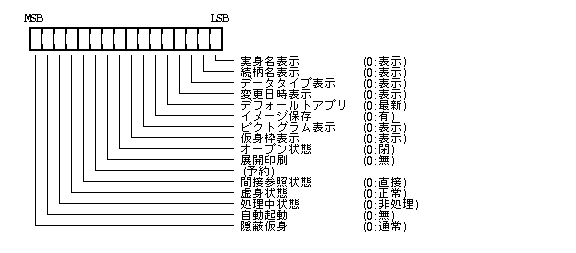
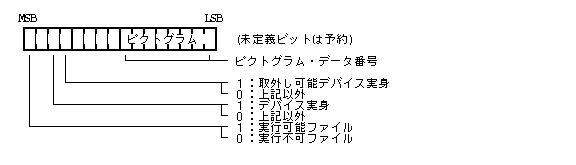

実身 / 仮身マネージャは、 外殻の 1 つとして「実身 / 仮身モデル」を実現する上での各種の高レベルの機能を提供しており、 アプリケーションプログラムは実身 / 仮身マネージャで提供される拡張システムコールを使用して容易に実身 / 仮身を表示 / 操作することが可能となる。
また、実身 / 仮身マネージャは、 アプリケーションプログラムの登録 / 削除機能を提供しており、 基本的に全てのアプリケーションプログラムは実身 / 仮身マネージャを通して起動されることになる。
実身 / 仮身マネージャの機能としては、以下のものがあげられる。
以下、この章ではHMI外部仕様としての実身 / 仮身マネージャを用いたアプリケーションによる、 実身 / 仮身の取扱いを記述しているが、 具体的な表示項目や表示のデザインなどの詳細についてはインプリメントに依存する。
「実身」とは意味のあるデータの集まりそれ自体のことであり、 実際のファイルに一対一に対応するものである。 実身をユーザが操作するための手掛かりが「仮身」であり、 実身は常に仮身を通して参照される。 仮身は実身を参照するための一種のタグであり、 一つの実身を一つ以上の仮身が参照することができる。

実身自体は目で見える形で直接的に表示されることはなく、 その実身を参照する仮身として表示される。 仮身は 1 つのデータ単位として、 文字や図形等と同様に実身内の任意の位置に埋め込まれて表示される。
仮身には実身の管理情報のみを表示している「閉じた仮身」と、 管理情報と共に実身の内容も表示している「開いた仮身」がある。
仮身を「Віконна система (Windowing System)に開く」ことにより、 その仮身が指す実身に適用されるアプリケーションが実行されて、 実身の内容が表示される。 どのアプリケーションを実行するかを指定せずに仮身からВіконна система (Windowing System)を開いた場合には、 その仮身に保持されているデフォールトアプリケーションが起動される。
仮身が格納されていた実身が存在するデバイスを、 仮身の「所属元デバイス」と呼び、 仮身が格納される実身が存在するデバイス、 即ち、仮身が表示されているВіконна система (Windowing System)の元となった実身が存在するデバイスを仮身の「所属デバイス」と呼ぶ。 仮身の所属デバイスは、仮身を、 異なるデバイスに存在する実身を元にして開かれたВіконна система (Windowing System)間で移動することにより動的に変化する。
仮身の所属元デバイスと異なるデバイスもしくはその中の実身を参照する仮身、 即ちリンクファイルを参照している仮身を「間接参照仮身」と呼ぶ。 間接参照仮身と実身は疎な結合であるため、その参照は保証されない。
また、仮身の所属デバイスと異なるデバイスもしくはその中の実身を参照する仮身を「一時間接参照仮身」と呼ぶ。 一時間接参照仮身は格納することによりリンクファイルを参照する間接参照仮身となる。
デバイスには、そのデバイスが物理的または論理的に接続されておらず直接アクセスできない「切断状態」と接続されておりアクセス可能な「接続状態」の 2 つの状態があり、 初期状態は切断状態となる。
「切断状態」のデバイスもしくはその中の実身を参照する間接参照仮身を「虚身」と呼ぶ。 虚身を通常の仮身のようにВіконна система (Windowing System)に開こうとした場合は、 「デバイス接続Системні панелі (Panels)」が現われ、 その虚身の参照する実身が最後に「接続状態」だった時点での所在等の管理情報を表示して、 接続状態にするか否かの判断を求める。 接続状態にすることにより虚身は通常の仮身と同様に操作できる。
一般の虚身は「閉じた虚身」であり開くことはできないが、 すでに開いている仮身が切断状態にされた場合は「開いた虚身」となる。
「閉じた仮身」は、横長の矩形枠で囲まれた図形として表示され、 参照する実身に関する情報が内部に表示される。
「開いた仮身」は、閉じた仮身の境界線が下に拡がり、 実身の内容自体を表示する表示エリアが追加されたものであり、 表示エリアは実身の内容が対応するアプリケーションにより表示される。
「選択状態」の場合、仮身の周囲に点線の枠をチラツキ表示させる。
仮身から開かれたВіконна система (Windowing System)が存在している状態を「処理中状態」と呼び、 元の仮身の表示全体に灰色パターンが重ねられる。 「間接参照仮身」および「一時間接参照仮身」の場合、 仮身の枠の左上角が境界線色で塗りつぶされる。 この間接参照を示す表示は、 仮身を格納した場合間接参照仮身となることを示すものである。 よって「間接参照仮身」をその仮身が参照する実身のデバイスのВіконна система (Windowing System)へ戻した場合は、 間接参照表示が解除される。
仮身の表示の大きさ、 デザイン等の詳細は実身 / 仮身マネージャのインプリメントに依存する。
閉じた仮身、および開いた仮身の最上行には、 ピクトグラム、実身名、続柄、タイプ、変更日時の項目が表示される。 各項目は指定した文字サイズに対応した大きさの文字で表示され、 文字サイズに応じて全体の表示領域の大きさが決定される。

実身名、続柄、タイプはそれぞれ仮身に付随する文字列であり、 実身名と続柄の間には、" : " が入り、タイプは " ( " と " ) " で括られる。
変更日時は、実身の内容を変更した最新の日時が表示される。 通常、変更日時は指定した文字サイズの縦横半分の大きさで表示される。
仮身の長さが短い場合は、右よりのものから見えなくなる。
通常、これらの表示項目はすべて表示するが、 仮身の属性として外枠も含めて表示しない項目を設定することが可能である。
虚身の場合は、 ピクトグラムを含めたタイトルバーの表示は灰色化表示となる。
虚身でない場合、参照する実身が実際には存在しない仮身は、 ピクトグラムの部分に斜線が引かれる。

開いた仮身の場合のみ存在し、 仮身の内側の境界線で囲まれた領域であり、 参照する実身の内容が対応するアプリケーションにより表示される。
表示エリア内に表示されている仮身(内部仮身)の場合は、 仮身としての各種の操作ができないことを区別するために、 仮身全体を囲う境界線を細い点線で描く。
内容を表示するアプリケーションが存在しない場合、 またはアプリケーションが表示を行なえなかった場合は、 表示エリアに左上から右下への対角線が引かれ、 表示エリアの表示ができなかったことを示す。
同様に、開いた虚身の場合も内容の表示ができないため、 表示エリアに左上から右下への灰色の対角線が引かれる。 この場合、タイトルバーの表示は灰色化表示となっている。
すべての項目を表示しない属性の仮身の場合は、 開いた仮身のタイトルバー部分は表示されなくなる。 さらに外枠も表示しない属性の場合には、 表示エリアのみが表示され、 境界線を含めた外側は表示されない。

ハンドルは仮身の 4 隅に存在する領域であり、 ドラッグして仮身を変形するために使用される。 ユーザが仮身の長さを変える場合は、水平にドラッグして変形を行ない、 「開いた仮身」にする、または「閉じた仮身」に戻す場合は、 水平方向以外にドラッグして変形を行なう。
ハンドルには特に境界線はないが、 アプリケーションは仮身が選択状態のときは、 ポインタがその上に来ると「変形手」に変化させ、 ドラッグにより変形できることを示す。
ハンドルによる変形は、 ドラッグしたハンドルと対角位置の点により決定される矩形領域となるが、 仮身の最小長さ、および最小高さより小さくなるような変形はできない。 仮身の最小高さは閉じた仮身の高さであり、 最小長さは実身 / 仮身マネージャのインプリメントに依存する。 また、開いた仮身の最小高さもインプリメントに依存し、 これよりも小さい高さの開いた仮身とすることはできない。

仮身は、境界線により囲まれているが、 表示エリア内に表示されている仮身 ( 内部仮身 ) は、 仮身としての操作ができないことを示すため、 境界線を細い点線とする。
境界線の四隅はハンドルの一部としてドラッグして変形するための手掛かりとなる。
仮身の境界線の内部は、 ハンドルの部分を除いてドラッグして移動するための手掛かりとなり、 アプリケーションは仮身が選択状態のときはポインタがその上にくると「移動手」とする。
仮身に対する操作としては、以下のものがあげられる。
これらの操作は、ポインティングデバイスにより画面上で直接的に指示される場合と、
oget_men() または oget_vmn()
によって得られる「仮身 ( / 実身 / ディスク ) 操作」Меню та командні інтерфейсиにより指示される場合がある。
| Меню та командні інтерфейси項目 | ||
|---|---|---|
| (1) | 仮身の選択 | ---- |
| (2) | 仮身の切断 | 切り離し |
| (3) | 仮身の移動 / 複写 | ---- |
| (4) | 仮身の変形 | ---- |
| (5) | 仮身を開く | 開く |
| (6) | 仮身を閉じる | 閉じる |
| (7) | 実身名の変更 | 実身名変更 |
| (8) | 続柄の変更 | 続柄変更 |
| (9) | 新版作成 | 新版作成(または実身複製) |
| (10) | 実身管理情報の表示 | 管理情報 |
| (11) | 仮身をВіконна система (Windowing System)に開く | (実行Меню та командні інтерфейси) |
| (12) | デバイスの再フォーマット | フォーマット |
| (13) | 仮身の属性の変更 | 属性変更 |
| (14) | アプリケーションの登録 / 削除 | アプリ登録 / 削除 |
| (15) | トレーからのデータ貼り込み | トレーから書込み |
| (16) | 仮身の接続 | 接続 |
| (17) | ディスク状態の表示 | 状態表示 |
| (18) | ディスク整理の実行 | ---- |
| (19) | ユーティリティの実行 | (ユーティリティ名) |
なお、開いた仮身の表示エリアに表示されている仮身 ( 内部仮身 ) に対しては、 上記の仮身操作は一切できない。
以下は、仮身に関するアプリケーションの標準的な操作方法の説明であり、 実身 / 仮身マネージャでは、これらの操作を行なうための基本的な機能を提供している。 実際の操作に伴う処理の細部はアプリケーションのインプリメントによって異なる場合がある。
仮身の領域内をポインティングデバイスでプレスするか、
または選択フレームで囲むことにより仮身を「選択状態」とし、
周囲に adsp_slt() または adsp_sel() を用いて、
チラツキ枠を表示する。
「選択状態」は、その仮身を表示しているアプリケーションのコマンド
( Меню та командні інтерфейси ) の対象であることを示すものであり、
複数の仮身を同時に「選択状態」としてもよい。
選択状態の仮身では、ポインタの形状を以下のように変化させる。
| ピクトグラム部分 | -- 「選択指」 |
| ハンドルの部分 | -- 「変形手」 |
| その他の部分 | -- 「移動手」 |
選択状態でない仮身を、 プレスしてドラッグした場合は、 プレスの時点で選択状態とし、 「移動手」または「変形手」を一瞬表示した後、 「握り」または「つまみ」に変化させ、 ドラッグを行なう。
切断したい仮身を選択し、
「仮身操作」Меню та командні інтерфейсиの「切り離し」を指定された場合、
oexe_vmn() を実行すると、
選択状態のすべての仮身が参照する実身が存在するデバイス
( Файлова система ) が切断状態となる。
「切断状態」となった仮身は、 虚身となり灰色化表示される。 同時に、切断したデバイスに含まれる実身を参照する他のすべての仮身も虚身となる。
開いた仮身は開いた虚身となり、 表示エリアはクリアされて左上から右下への灰色の対角線が表示される。
虚身となった仮身から開かれていたВіконна система (Windowing System)は、 虚身Віконна система (Windowing System)となり、Віконна система (Windowing System)のタイトルは自動的に灰色化表示となる。
仮身のハンドル部以外 ( 表示エリアを含む ) をポイントし ( この時点で仮身が選択状態ならば、ポインタ形状を「移動手」にする。 ただし、ピクトグラム上では「選択指」にする)、 ドラッグすることによって移動を行なう。 リリース時にМеню та командні інтерфейсиボタンが押下されていれば複写を行なう。
ドラッグ中はポインタを「握り」にする。
ただし、ピクトグラム上ではプレスの時点で「移動手」を一瞬表示した後「握り」にする。
仮身の「影」を adsp_slt() または adsp_sel() を用いて、
ドラッグにあわせて移動させる。
「影」は仮身を囲む大きさの点線の矩形枠である。
ボタンをリリースした時点で、
ポインタを「移動手」、または「選択指」に戻し、
仮身の位置を決定し、omov_vob() / odup_vob() を用いて、
移動 / 複写を行なう。
移動 / 複写移動後の仮身は選択状態を維持する。
「処理中状態」の仮身を複写した場合、 複写された仮身は「処理中状態」でなく通常の仮身となる。
仮身のハンドル部をポイントし
(この時点で仮身が選択状態ならば、ポインタ形状を「変形手」にする)、
ドラッグすることによって変形を行なう。
ドラッグ中はポインタを「つまみ」にする。
仮身の「影」を adsp_slt() または adsp_sel() を用いて表示し、
ドラッグにあわせて変形させる。
ボタンをリリースした時点で、
ポインタを「変形手」に戻し、
仮身の形を決定し、orsz_vob() を用いて変形を行なう。
変形後の仮身は選択状態を維持する。
水平方向の変形は仮身の長さを変えるだけであるが、 水平以外の方向の変形は、仮身を開いたり閉じたりすることになる。
仮身の変形が親Віконна система (Windowing System)の枠を越えた場合の処理はアプリケーションの仕様の範囲である。
虚身は変形できないが、閉じることは可能とする。
仮身は、実身 / 仮身マネージャのインプリメント依存の最小サイズ以下にはすることはできない。
また、開いた仮身を、その最小サイズ以下にした場合は、
orsz_vob() によって閉じた仮身となる。
仮身は、変形により開くことができるが、変形以外にもМеню та командні інтерфейси指定により開くことができる。
開きたい「閉じた仮身」を選択状態とし、
「仮身操作」Меню та командні інтерфейсиの「開く」を指定された場合、
oexe_vmn() を実行すると、
選択状態のすべての閉じた仮身が開かれ「開いた仮身」となる。
表示エリア内部にデフォールトアプリケーションにより最後に閉じたときの内容が表示される。 開いた仮身の選択状態は維持する。
デフォールトアプリケーションを起動できなかった場合は、 表示エリアには左上から右下への対角線が表示される。
虚身は oexe_vmn() によって開かれることはない。
仮身は、変形により閉じることができるが、 変形以外にもМеню та командні інтерфейси指定により閉じることができる。
閉じたい「開いた仮身」を選択状態とし、
「仮身操作」Меню та командні інтерфейсиの「閉じる」を指定された場合、
oexe_vmn() を実行すると、
選択状態のすべての開いた仮身が閉じられ「閉じた仮身」となる。
タイトルバーを残し表示エリアが消え、 仮身が閉じられる。閉じた仮身の選択状態は維持する。
仮身の選択後、「仮身操作」Меню та командні інтерфейсиの「実身名変更」を指定された場合、
oexe_vmn() を実行する。
「実身名変更Системні панелі (Panels)」が表示され、 Системні панелі (Panels)内のテキストボックスにより実身名を変更することができる。 複数の仮身が選択されている場合は、 それぞれの仮身に対して「実身名変更Системні панелі (Panels)」が順に表示される。
同一の実身を指す他の仮身が表示されている場合、 その実身名の表示も同時に変更される。
仮身の選択状態は維持する。
仮身の選択後、
「仮身操作」Меню та командні інтерфейсиの「続柄変更」を指定された場合、oexe_vmn() を実行する。
「続柄変更Системні панелі (Panels)」が表示され、 新しい続柄を選択することができる。 適当な続柄がない場合、 既存の続柄の変更または新しい続柄を追加することができる。 複数の仮身が選択されている場合は、 それぞれの仮身に対して「続柄変更Системні панелі (Panels)」が順に表示される。
既存の続柄を変更したときは、 同一の続柄を持つ他の仮身が表示されている場合、 その続柄の表示も同時に変更される。
仮身の選択状態は維持する。
仮身の複写では同一の実身を参照する仮身が複写されるだけであり、 実身は複写されないため、「新版作成」により実身を複写する。
複写したい実身を参照する仮身を選択状態とし、
「仮身操作」Меню та командні інтерфейсиの「新版作成」を指定された場合、
oexe_vmn() を実行する。
あるいは、仮身をクリックドラッグにより移動した場合、
ocre_obj() を実行する。
選択した仮身がフロッピーディスクのデバイス仮身の場合は、 「デバイス複製Системні панелі (Panels)」が表示され、 デバイスの複製か新版作成かを選択できる。 デバイスの複製を選択した場合は、 「デバイス接続Системні панелі (Panels)」が表示され、 接続したフロッピーディスクに選択したフロッピーディスクの複製が生成される。 接続したフロッピーディスクの元の内容は削除される。 通常、この機能はフロッピーディスクドライブが 2 台以上装着されているときにサポートされる。
新版作成の場合、「新版作成Системні панелі (Panels)」が表示され、 Системні панелі (Panels)内のテキストボックスにより複写する新版の実身名を設定することができる。 テキストボックスにはデフォールトとして元の実身名が設定されている。
Системні панелі (Panels)内のスイッチにより新版作成を開始すると、 仮身が参照する実身を元として参照している実身全てが仮身の所属デバイス上に複写されて、 完全に新しい実身群が生成される。
複写する実身群に含まれる間接参照仮身の参照先のデバイスが接続されている場合は、 「間接参照Системні панелі (Panels)」が表示され、 間接参照を解消して参照先の実身を複写するか、 間接参照仮身のままとするかを指定できる。
複写した新版または複製したフロッピーディスクを参照する仮身が、 選択した仮身の近くに新たに生成されるので、 アプリケーションはその仮身の表示を行なわなければならない。 元の仮身の選択状態は維持する。
複数の仮身が選択されている場合は、 それぞれの仮身に対して「新版作成Системні панелі (Panels)」が順に表示されて新版作成を行なうことができる。

管理情報を表示したい実身を参照する仮身を選択し、
「仮身操作」Меню та командні інтерфейсиの「管理情報」が指定された場合、
oexe_vmn() を実行する。
「管理情報Віконна система (Windowing System)」が開かれ、 その内部に実身管理情報が表示される。 このВіконна система (Windowing System)により一部の情報の変更もできる。
複数の仮身が選択されている場合は、 それぞれの仮身に対して「管理情報Віконна система (Windowing System)」が同時に表示される。
仮身の選択状態は維持する。
「管理情報Віконна система (Windowing System)」には、以下に示すような情報が表示され、 一部の変更が可能となる(詳細はインプリメントに依存する)。
| 変更の可否 | ||
|---|---|---|
| 実身情報 : | ||
| 実身名 | − | |
| 続柄 | − | |
| 所属デバイス名 | − | |
| デバイス所在 | − | |
| 実身サイズ | − | |
| 実身合計サイズ | − | |
| 作成日時 | − | |
| 変更日時 | − | |
| 参照する仮身数 | − | |
| 含む仮身数 | − | |
| 使用者管理 : | ||
| 所有者名 | − | |
| 所属グループ名 | − | |
| 所有者アクセスモード | 可 | |
| 所属(グループ)アクセスレベル | 可 | |
| 一般アクセスレベル | 可 | |
| 合言葉 | 可 | |
| 書込不可属性 | 可 | |
| 削除不可属性 | 可 | |
| 付箋指定 : | ||
| データタイプ | − | |
| 適用機能付箋一覧 | 可 | |
| デフォールトアプリ | 可 | |
| デフォールトアプリ固定／最新 | 可 | |
Віконна система (Windowing System)に開きたい仮身を選択状態とし、
「実行」Меню та командні інтерфейсиの中の適用するアプリケーションを指定された場合、
oexe_apg() を用いて、
指定されたアプリケーションの起動を行なう。
Віконна система (Windowing System)に開きたい仮身のピクトグラム ( または、仮身の任意の箇所 )
がダブルクリックされた場合は、oexe_apg() を用いて、
その仮身のデフォールトアプリケーションの起動を行なう。
Віконна система (Windowing System)が開かれ、開いたВіконна система (Windowing System)は入力受付状態となる。 Віконна система (Windowing System)の大きさ / 位置は、起動されたアプリケーションに依存する。
起動すべきアプリケーションの起動ができなかった場合は、 その旨のエラーСистемні панелі (Panels)が表示される。 ただし、インプリメントによっては、起動すべきアプリケーションが見つからなかった場合は、 アプリケーションの機能付箋名をСистемні панелі (Panels)に表示して、 アプリケーションの入ったデバイスの接続を要求する場合もあり、 その場合はデバイスの接続が行なわれた後にアプリケーションが起動される。
起動すべきアプリケーションが複数存在する場合は、 最新のアプリケーションを起動するか、 または、「アプリケーション選択Системні панелі (Panels)」により起動するアプリケーションを選択する (どちらかはインプリメントに依存する)。
「処理中状態」の仮身のピクトグラム ( または、仮身の任意の箇所 )
がダブルクリックされた場合は、
oexe_apg() を実行すると、処理中のВіконна система (Windowing System)が入力受付状態になり、
新たにアプリケーションが起動されることはない。
なお、「処理中状態」の仮身の「実行」Меню та командні інтерфейсиは不能状態となる。
虚身をダブルクリックによりВіконна система (Windowing System)に開こうとした場合も、
oexe_apg()
を実行するとデバイスの接続を求める「デバイス接続Системні панелі (Panels)」が表示され、
デバイスの接続が行なわれた後にデフォールトアプリケーションが起動される。
複数の仮身を選択している場合の動作はアプリケーションのインプリメントに依存する。
再フォーマットを行ないたい仮身を選択状態とし、
「仮身操作」Меню та командні інтерфейсиの「フォーマット」を指定された場合、
oexe_vmn() を実行する。
この項目は接続状態のデバイス仮身に対してのみ
oget_men() または
oget_vmn() で取り出される。
「フォーマットСистемні панелі (Panels)」が表示され、 指定により「フォーマット」を開始する。
フォーマット中の動作はシステムで用意されるフォーマッタに依存する。
フォーマット後は、 元のデバイス仮身は新たに再フォーマットしたデバイス仮身となり、 元のデバイスを参照していた他の仮身は虚身となる。
一般に、複数の仮身を選択している場合は、 この操作は適用されない。
属性を変更したい仮身を選択し、
「仮身操作」Меню та командні інтерфейсиの「属性変更」を指定された場合、
oexe_vmn() を実行する。
「属性変更Системні панелі (Panels)」が表示され、 以下のような属性を変更できる(詳細はインプリメントに依存する)。
一般に、複数の仮身を選択している場合は、 すべて同一属性に変更される。
アプリケーションの登録または、削除を行ないたい仮身を選択し、
「仮身操作」Меню та командні інтерфейсиの「アプリ登録」または「アプリ削除」を指定された場合、
oexe_vmn() を実行する。
この項目は実行可能な実身を参照する仮身に対してのみ
oget_men() または、oget_vmn() で取り出される。
選択した仮身が参照する実行可能な実身を、 その仮身の所属デバイス上のアプリケーションとして登録、 または削除する。
一般に、複数の仮身を選択している場合は、 この操作は適用されない。
トレーからのデータ貼り込みを行ないたい仮身を選択し、
「仮身操作」Меню та командні інтерфейсиの「トレーから書込」を指定された場合、
oexe_vmn() を実行する。
選択した仮身が参照する実身のデフォールトアプリケーションを起動して、 データ貼り込みが要求される。 トレー内のデータがどのように貼り込まれるかはデフォールトアプリケーションに依存する。
貼り込みができなかった場合は、 その旨のエラーСистемні панелі (Panels)が表示される。
トレーの内容は変化しない。
複数の仮身を選択している場合の動作はアプリケーションのインプリメントに依存する。
接続したい仮身 ( 虚身 ) を選択状態とする。 複数の仮身を同時に選択状態としても良い。
「仮身操作」Меню та командні інтерфейсиの「接続」を指定することにより、 デバイスの接続を求める「デバイス接続Системні панелі (Panels)」が表示され、 仮身の所属デバイスの接続を行なうことができる。 取り外しができないデバイスの場合は、 「デバイス接続Системні панелі (Panels)」は表示されずに、 所属デバイスが接続される。
「仮身操作」Меню та командні інтерфейсиの「接続」を指定することにより、 仮身の所属デバイスの接続を行なうことができる。 所属デバイスが取り外し可能な場合は、 デバイスの接続を求める「デバイス接続Системні панелі (Panels)」が表示される。
仮身の接続は、デバイスを直接的に接続したり、 実行等の他の操作に伴って行なうことができる。
ディスク状態を表示したいディスク上の仮身を選択状態とする。
「仮身操作」Меню та командні інтерфейсиの「ディスク状態」を指定することにより、 「ディスク状態Системні панелі (Panels)」が表示される。
「ディスク状態Системні панелі (Panels)」には以下のような項目が表示される(詳細はインプリメントに依存する)。
Файлова система(ディスク)名
全体サイズ (K バイト)
使用サイズ (K バイト)
空きサイズ (K バイト)
使用比率 (%)
使用実身数
くず実身数
[ディスク整理]の実行スイッチ
「ディスク状態Системні панелі (Panels)」を表示して[ディスク整理]を指定することにより、 「ディスク整理」Віконна система (Windowing System)が開かれ、 その内部にくず実身が表示される。 このВіконна система (Windowing System)によりくず実身の削除、回収が可能となる。
対象とする仮身を選択状態とする。
「仮身操作」Меню та командні інтерфейсиに表示される、 ユーティリティ名を指定することにより、 選択した仮身に対して、そのユーティリティが実行される。
具体的にどのようなユーティリティが提供されるかはインプリメントに依存する。
付箋は大きく以下に示す種類がある。
指定付箋以外は、 いずれもアプリケーションプログラムを直接参照し、 付箋の処理のために基本的に対応するアプリケーションプログラムの起動を必要とする。
実身 / 仮身マネージャでは、 指定付箋以外の付箋に関する表示 / 操作 / 実行処理のための各種の関数を提供している。
付箋は仮身とほぼ同様に表示されるが、続柄、および変更日時は定義されない。 また、ピクトグラムは、通常付箋を示す共通シンボルであるが、 付箋独自のピクトグラムとする場合もある。
付箋に対する操作としては、以下のものがあげられる。
これらの操作は、ポインティングデバイスにより画面上で直接的に指示される場合と、
oget_men() または oget_vmn()
によって得られる「付箋操作」Меню та командні інтерфейсиにより指示される場合がある。
| Меню та командні інтерфейси項目 | ||
|---|---|---|
| (1) | 付箋の選択 | ---- |
| (2) | 付箋の移動 / 複写 | ---- |
| (3) | 付箋の変形 | ---- |
| (4) | 付箋名の変更 | 付箋名変更 |
| (5) | 付箋の属性の変更 | 属性変更 |
| (6) | 付箋の実行 | 起動 |
「Меню та командні інтерфейси項目」の実際の表記は実身 / 仮身マネージャのインプリメントに依存する。
以下は、アプリケーションの付箋に関する標準的な操作方法の説明であり、 実身 / f仮身マネージャでは、 これらの操作を行なうための基本的な機能を提供している。 実際の操作に伴う処理の細部はアプリケーションのインプリメントによって異なる場合がある。
oexe_apg()
によって付箋の参照するアプリケーションが起動される。
通常はアプリケーションによりセッティングСистемні панелі (Panels)が表示されることが多い。
仮身は、 内部的にはファイル管理で定義されている「リンク」により表現され、 その取り扱い上、以下のように分類される。
Віконна система (Windowing System)内に表示され、標準の属性／操作が適用される仮身。
開いた仮身の表示エリア内に表示される、 単なる静的な表示としての仮身。 内部仮身は、選択できず直接的に操作の対象となり得ず、 通常、仮身の境界線は細い点線で描かれる。 開いた内部仮身内にネスティングしている仮身も全て内部仮身となる。
通常の状態では表示されない仮身であり、 システムで内部的に使用される実身に対して使用する。 ただし、実身 / 仮身マネージャでは隠蔽仮身も通常の仮身と同様に取り扱う。
今後、単に仮身という場合は通常仮身を示すものとする。
実身 / 仮身マネージャでは仮身を、
指定したВіконна система (Windowing System) / Системні панелі (Panels)上に存在する一種のКомпоненти графічного інтерфейсуとして登録し、
登録した仮身に対して仮身ID ( vid > 0 ) を割り当てて管理する。
アプリケーションは登録時に得られる仮身IDを使用して、
仮身の表示 / 操作を行なうことになる。
ただし、内部仮身のサポートのため、仮身を登録せずに直接表示する機能も提供している。
仮身は、内部的に以下に示す仮身リンク構造体により表現される。
このデータ構造体は、ファイル管理で使用している
LINK 構造体と同一であるが、
フィールドの定義が異なっている。
typedef struct {
TC fs_name[20]; /* Файлова система名 */
UH f_id; /* ファイルID */
UH attr; /* 仮身タイプ／属性 */
UH rel; /* 続柄インデックス */
UH appl[3]; /* アプリケーション ID */
} VLINK;
fs_name と f_id は仮身の対象とするファイルを示すもので、
核のファイル管理レベルで使用され、
それ以外のデータはファイル管理レベルでは使用しないデータであり、
仮身固有のデータとして以下のように定義される。
attr :
仮身属性 / 状態を示す以下の内容のものである。

隠蔽仮身が "1" の場合は、隠蔽仮身を示し、 通常の状態では表示されないことを意味する。 この処理はアプリケーションレベルで行なわれ、 実身 / 仮身マネージャでは、通常の仮身と同様に取り扱う。
自動起動が、"1" の場合は、 仮身を登録すると同時に自動的にデフォールトアプリケーションを実行することを意味する。
虚身状態が "1" の場合は、 参照するデバイスが切断状態であることを示し、 虚身としての表示が行なわれる。 虚身状態は動的な状態として定義される。
処理中状態が "1" の場合は、 仮身がВіконна система (Windowing System)に開かれている状態であることを示し、 処理中状態としての表示が行なわれる。 処理中状態は動的な状態として定義される。
間接参照状態が "1" の場合は、 その仮身が他のデバイス上のファイルを参照していることを示し、 "0" の場合は、 同一デバイス上のファイルを直接参照していることを示す。
展開印刷が、"1" の場合は、 印刷するときに仮身を展開してその内容を印刷することを意味する。
オープン状態が "0" の場合は、 閉じた仮身、"1" の場合は開いた仮身であることを示す。
イメージ保存が "0" の場合は、 開いた仮身の表示イメージをできるだけ保存し、 再表示を高速に行なうことを意味し、 "1" の場合は、 開いた仮身の表示イメージは保存しないことを意味する。
デフォールトアプリが、"0" の場合、 最新実行のアプリケーションをデフォールトアプリケーションとすることを示し、 "1" の場合は、 デフォールトアプリケーションは固定であることを示す。
ピクトグラム表示、仮身枠表示、実身名表示 〜 変更日時表示は、 それぞれ対応する項目を仮身として表示するか否かを示すもので、 "0" で表示することを示す。
appl :
仮身にデフォールトとして適用されるアプリケーションプログラムのアプリケーション ID を示す 3 つのハーフワード ( 16 ビット ) の配列である。
アプリケーション ID は全てのアプリケーションプログラムに対して付けられたユニークな ID であり、 最初の 2 つが適用するデータタイプを示し、 3 つ目は同一データタイプに適用されるアプリケーションを区別するための識別番号となる。
データタイプ ( 最初の 2 つ ) が 0 のときは、 参照する実身(ファイル)内に存在する先頭の実行機能付箋がデフォールトアプリケーションであると見なされる。
ただし、3 つ目の 0x4000 に対応するビットが "1" の場合は、
そのアプリケーションはデフォールトアプリケーションとなることはできない。
rel :
仮身の続柄インデックスであり、 仮身の所属デバイスに含まれている続柄ファイル内のインデックスを示す。 この続柄インデックスにより、 続柄名の表示、および仮身内での続柄名の表示カラーが定義される。
仮身自体は VLINK 構造体により表わされるが、
仮身を実際に実行したり表示するために VLINK
構造体と対になる「仮身セグメント」が必要となる。
仮身セグメントは以下に示すデータ構造を持つ。
typedef struct {
RECT view; /* 表示領域 */
H height; /* 開いた場合の高さ */
CHSIZE chsz; /* 文字サイズ */
COLOR frcol; /* 枠の色 */
COLOR chcol; /* 文字色 */
COLOR tbcol; /* タイトル背景色 */
COLOR bgcol; /* 開いた場合の背景色 */
UH dlen; /* 固有データのバイト長 */
/* dlen バイトの固有データが続く */
} VOBJSEG;
view :
仮身の実際の表示領域をВіконна система (Windowing System) / Системні панелі (Panels)の相対座標で示す。
chsz :
仮身の文字サイズを示す以下の値。
UUSS SSSS SSSS SSSS
U :
S :
U で指定された単位での文字サイズ指定。
0 の場合は、実身 / 仮身マネージャで規定するデフォールト文字サイズを意味する。
height :
仮身を開いた場合のデフォールトの仮身の高さをВіконна система (Windowing System) / Системні панелі (Panels)の座標系で示す。 < 0 の場合は、 その仮身は開けないことを示す。 また 0 の場合は実身 / 仮身マネージャで規定するデフォールトの大きさで開くことを示す。
frcol :
仮身枠の色を示す。
chcol :
仮身のタイトルバーの文字色を示す。
tbcol:
仮身のタイトルバーの背景色を示す。
bgcol:
開いた仮身の表示エリアの背景色を示す。
dlen:
デフォールトアプリケーションで使用する固有データのバイト数を示す。 このバイト数のデータが直後に続くことになる。 固有データは、 デフォールトアプリケーションの機能付箋に含まれているものと同一のデータ構造の内容を持ち、 デフォールトアプリケーションを起動して仮身をВіконна система (Windowing System)に開いた場合にアプリケーションに渡されるデータである。
仮身セグメントは、
固有データを含んだ 1 つのデータ構造であり、
VLINK 構造体と対になり仮身を定義するために使用される。
続柄は仮身に対して任意に付けることのできる一種の属性としての名前 ( 最大 16 文字 ) である。
続柄はФайлова система ( デバイス ) 単位で定義され、 仮身の参照する実身 ( 間接参照仮身の場合はリンクファイル ) の存在するФайлова системаのルートファイル直下に存在する「続柄管理ファイル」に以下のデータが保持され、 そのインデックス ( 0 〜 ) が仮身のデータとして格納される。 通常、インデックス 0 は続柄名なし ( 全て 0 ) となっている。
typedef struct {
TC name[16]; /* 続柄名 */
COLOR col; /* 続柄名の色 */
} VOBJREL;
「続柄管理ファイル」の内容は、 仮身操作の「続柄変更Системні панелі (Panels)」により登録 / 削除することが可能である。
続柄はФайлова система単位で定義されているため、
仮身を移動 / 複写した後、異なるФайлова система内へ保存する場合、
同一の続柄名とするために、
続柄インデックスの変換、
および続柄名の新規登録を行なう必要があり、
このための関数 ocnv_vob() が用意されている。
この場合、「続柄管理ファイル」への新規登録のみが行なわれ 、
削除は一切行なわれない。
つまり、登録した続柄名の削除は仮身操作の「続柄変更Системні панелі (Panels)」によってのみ行なうことが可能となる。
実身の基本データタイプは、
ファイルのアプリケーションタイプ ( atype ) として定義される。
ファイルのアプリケーションタイプはファイルの生成時に指定するファイル管理レベルでは使用されないデータであり、
以下の内容を持つ。

ピクトグラムデータ番号は、
データボックスに定義されている "PICT_DATA" タイプのデータ番号であり、
対応する仮身やВіконна система (Windowing System)のピクトグラムとして使用される。
上位バイトは、そのファイルの属性を示し、 実身 / 仮身マネージャで使用される。 特に実身のタイプが「実行可能ファイル」タイプでないものはアプリケーションプログラムとしての登録は不可となる。
実身 / 仮身マネージャでは付箋についても、 仮身と同様に登録を行ない、 登録した付箋に対しての各種の操作を提供する。 すなわち、付箋は特殊な仮身として取り扱われ、 登録時に得られる ID も仮身 ID として取り扱われる。
実身 / 仮身マネージャとして提供される関数の多くは、 仮身と付箋の両方に対して適用可能であり、 このためアプリケーションは仮身と付箋の区別をせずに済むようになっている。
付箋は以下に示す共通的なデータ構造のヘッダを持ち、 その直後にアプリケーションの固有データが続いて入ることになる。
typedef struct {
RECT view; /* 表示領域 */
CHSIZE chsz; /* 文字サイズ */
UH frcol[2]; /* 枠の色 */
UH chcol[2]; /* 文字色 */
UH tbcol[2]; /* タイトル背景色 */
UH pict; /* ピクトグラム/タイプ */
UH appl[3]; /* アプリケーションID */
TC name[16]; /* 付箋名 */
TC dtype[16]; /* データタイプ名 */
UH dlen; /* 固有データのバイト長 */
/* dlen バイトの固有データが続く */
} FUSENSEG;
view :
付箋の実際の表示領域をВіконна система (Windowing System) / Системні панелі (Panels)の相対座標で示す。
chsz :
付箋の文字サイズを示す。仮身の文字サイズと同じデータ形式となる。
frcol :
付箋枠の色を示す。
chcol :
付箋のタイトルバーの文字色を示す。
tbcol :
付箋のタイトルバーの背景色を示す。
pict :
付箋表示の場合に使用されるピクトグラムのデータ番号が下位バイトに入る。 0 は標準の付箋用ピクトグラムを意味する。 上位バイトは付箋の属性を示す。
HAxD NTxx PPPP PPPP
P | ピクトグラムのデータ番号 |
H = 1 | 隠蔽付箋 ( 隠蔽仮身と同様に実身 / 仮身マネージャでは無視する ) |
A = 1 | 自動起動 |
D = 1 | 虚身 ( 灰色化 ) 表示 |
N = 1 | 付箋名表示なし |
T = 1 | データタイプ名表示なし |
x | 予約 |
name :
付箋名を示す。
dtype :
データタイプ名を示す。
appl :
付箋が参照するアプリケーションプログラムのアプリケーション ID を示す。
dlen :
続く固有データのバイト数を示す。
付箋は、実身内の1つの独立したレコードとして格納され、 レコードタイプは、「実行機能付箋タイプ」または「機能付箋タイプ」となる。 サブタイプは特に使用しない。 「実行機能付箋タイプ」の場合は、 その実身に適用可能なアプリケーションプログラムを意味し、 実行Меню та командні інтерфейсиとしてその付箋名が表示されることになる。
さらに実行機能付箋のテンプレートとなる付箋がアプリケーションプログラムファイル内の 1 つの独立したレコードとして格納され、 レコードタイプは、 「機能付箋タイプ」となる。サブタイプは特に使用しない。
仮身のデフォールトアプリケーションに対応する付箋の固有データは仮身セグメントの中に含まれることになる。
ユーザの処理の実行環境となっているファイルを「実行環境ファイル」と呼ぶ。
実行環境ファイルはシステム全体で唯一のものとして定義され、
システム立ち上げ時に最初にВіконна система (Windowing System)を開くПроцеси та потокиは、
必ず実行環境ファイルを設定しなければならない。
また、以降のПроцеси та потокиは ochg_env()
によって実行時にネスティングして変更することができる。
変更した実行環境ファイルは、
スタック状に保持されるため、
元の実行環境ファイルに戻ることが可能である。
実行環境ファイルの存在するデバイス ( Файлова система ) は、 アプリケーションプログラムの検索の対象となる点で重要であり、 また、フロッピーディスク等のデバイスを挿入した場合、 自動的にその時点の実行環境ファイル上に対応するデバイス仮身が生成されることになる。
実行環境ファイルは、 そのファイルを開いているВіконна система (Windowing System)と対となって定義され、 そのВіконна система (Windowing System)を実行環境Віконна система (Windowing System)と呼ぶ。
アプリケーションプログラムは登録することにより、 初めて実行可能となる。 登録は、デバイス ( Файлова система ) 単位で行なわれ、 通常、そのФайлова система内に存在する全てのアプリケーションプログラムは登録されることになる。
アプリケーションプログラムの登録は、
oreg_apg() により、
そのアプリケーションへのリンクが存在するФайлова система内のルートファイルの直下に存在する「アプリケーション登録ファイル」に、
アプリケーションプログラムのファイルへのリンクを格納することにより行なわれ、
同時にアプリケーションのデータタイプ名も格納される。
なお、この登録ファイルは通常は仮身として表示されない。
登録するアプリケーションプログラムの所在には、 特に制限がなく、別デバイスに存在していてもよい。
アプリケーションプログラムは、3 つのハーフワードのユニークな「アプリケーション ID」を持ち、 この ID により識別される。 アプリケーション ID の最初の 2 つは適用するデータタイプを示し、 最後の 1 つは同一データタイプに適用されるアプリケーションを区別するための識別番号となる。
同一のアプリケーション ID を持つ異なるファイルのアプリケーションプログラムを複数個登録することも可能である。
アプリケーションプログラムは対応する付箋を元に実行される。 付箋にはアプリケーション ID が入っており、 これを元に登録済みのアプリケーションプログラムが検索されて実行される。
アプリケーションプログラムの検索は、
その時点の実行環境ファイルが属するデバイス ( Файлова система )
に登録されているアプリケーションプログラムに対して行なわれ、
さらに検索対象デバイス ( Файлова система )が oset_sea()
によって設定してあった場合には、
設定してある検索対象デバイスに対しても検索される。
なお、oprc_dev(), oatt_vob() によって接続されたデバイスが、
自動的に検索対象デバイスとして設定されるかどうかはインプリメントに依存する。
デフォールトでは、 検索対象デバイスは設定されていないため、 実行環境のデバイスのみが検索対象となる。
対応するアプリケーションプログラムが複数個登録してあった場合は、 最新の更新日時のアプリケーションを自動的に選択するか、 「アプリケーション選択Системні панелі (Panels)」を表示してアプリケーションを選択させるかは、 インプリメントに依存する。 このような状況はアプリケーションのバージョンアップ時に古いバージョンと新しいバージョンの両方が登録された場合に発生することになる。
なお、異なるアプリケーションであることは、 ファイルの総バイト数、総レコード数、ファイル名のいずれかが異なっていることで判断され、 これらがすべて同一である場合は、 同一のアプリケーションとみなされ、 最初に検索されたアプリケーションのみが有効となる。
アプリケーションプログラムファイルのアプリケーションタイプは実行可能ファイルでなくてはいけない。 また、以下に示すレコード構成でなくてはいけない。 実行プログラムレコードは先頭レコードでなくてはいけないが、 他のレコードの順番は任意である。
標準オブジェクト形式の内容
登録時にアプリケーション ID、およびデータタイプ名を取り出すために使用される。 この機能付箋は、 アプリケーションプログラムに対する付箋のテンプレートとしても使用されるため、 固有データ部分はデフォールトとしての標準値となる。
アプリケーション自体で解釈 / 使用する。
登録されたアプリケーションプログラムに対しては、以下の 4 種類の起動が行なわれる。
指定された仮身に対してВіконна система (Windowing System)を開いてアプリケーション本来の機能を実行する。 実行Меню та командні інтерфейси、小物Меню та командні інтерфейсиまたはピクトグラム ( または、仮身の任意の箇所 ) のダブルクリックにより起動される。
指定された開いた仮身の表示エリア内の表示を行ない、 表示完了後に終了する。開いた仮身の表示要求により起動される。
指定された仮身の参照する実身にトレーに格納されているデータを貼り込み、 貼り込み完了後に終了する。仮身への貼り込み操作で起動される。
指定された付箋に対して対応するアプリケーションを起動する。 付箋のピクトグラム ( または、付箋の任意の箇所 ) のダブルクリック、 付箋操作Меню та командні інтерфейсиにより起動される。
指定された開いた仮身の表示エリア内の表示に相当する TAD データを作成し、 データ作成完了後に終了する。
起動時には、各起動タイプに応じた起動Повідомленняが、 起動したПроцеси та потокиに対して送られるため、 アプリケーションは要求された処理を起動Повідомлення内のパラメータに従って行なう必要がある。
仮身のオープン起動では、起動したПроцеси та потокиに対して、 以下の起動Повідомленняが渡されるので、 起動されたПроцеси та потокиは起動Повідомленняに従って、 対象実身 ( ファイル ) に対してアプリケーションとしての処理を行なうことになる。
typedef struct {
W type; /* = EXECREQ (= 0x10) */
W size; /* Повідомлення本体サイズ */
LINK self; /* 起動ファイル */
LINK lnk; /* 対象ファイル */
W vid; /* 対象仮身 ID */
W pwid; /* 親Віконна система (Windowing System) ID */
W info; /* レコード番号/付箋データポインタ */
RECT r; /* 生成元 */
COLOR bgcol; /* 元の仮身の背景色 */
W mode; /* 起動モード */
} M_EXECREQ;
size はПовідомлення本体のバイトサイズであり、
Повідомлення全体のバイトサイズ - sizeof(W) * 2 の値となる。
self は、起動されたアプリケーションプログラム自体のリンクとなる。
LINK 構造体の atr3 〜 atr5 には、
起動の対象となったアプリケーション ID がセットされている。
lnk は、起動の対象となった仮身の参照する実身へのリンクとなる。
小物アプリケーションの場合は、
「小物入れ」ファイルへのリンクとなる。
vidは、
仮身のオープン起動の場合、
対象仮身 ( 生成元の仮身 ) の仮身 ID であり、
小物アプリケーションの起動の場合、
実身 / 仮身マネージャで内部的に管理している ID
(対応する小物Меню та командні інтерфейсиの項目番号と 0x4000との OR をとったもの ) が格納される。
初期起動のときは、vid = 0 となる。
pwid は、起動の対象となった仮身が登録されているВіконна система (Windowing System) ID であり、
小物アプリケーションの場合は 0 となる。
info は、実身 / 仮身マネージャで管理している付箋の固有データへのポインタ、
または対応する実行機能付箋のレコード番号となり、
前者の場合は、info で指定されたポインタから固有データを取り出し、
後者の場合は、起動対象となった実行機能付箋内の固有データ部分を
oget_fsn() を使用して取り出すことになる。
小物アプリケーションの場合、
「小物入れ」ファイル内の対応する機能付箋のレコード番号となり、
対応する機能付箋の固有データ部分を
oget_fsn() を使用して取り出すことになる。
info は、
付箋全体へのポインタではなく、
固有データ部分のみの以下に示す構造体へのポインタである。
info -------> | UH dlen | -- 固有データのバイトサイズ |
UB dat[dlen] | -- 固有データ |
通常、アプリケーションは、
起動時に適用された実行機能付箋の固有データを必要に応じて終了前に
oput_fsn() を使用して自分で更新し、
さらに更新した固有データを実身 / 仮身マネージャに終了通知として渡す必要がある。
ただし、起動時に指定された固有データを使用するか否か、
および終了時に更新するか否かの最終判断はアプリケーションに依存する。
r は、起動の対象となった仮身の表示領域を示し、
pwid で示されるВіконна система (Windowing System)の相対座標で表される。
bgcol は、
起動の対象となった仮身の表示エリアの背景色を示し、
通常、Віконна система (Windowing System)の背景色に使用される。
mode は、起動のモードを示す以下の値である。
xxxx xxxx xxxx xxxx Ixxx xxxx xxxx xxTR
| R | = 0 | : info は実身 / 仮身マネージャで管理している
付箋の固有データへのポインタとなる
(デフォールトアプリケーションの起動時) |
| = 1 | : info は対象ファイル内の実行機能付箋レコードのレコード番号
(実行Меню та командні інтерфейсиによるデフォールトアプリケーションでないアプリケーションの起動時) | |
| T | = 0 | : 仮身オープン起動 |
| = 1 | : 小物アプリケーション起動 | |
| I | = 0 | : 通常起動 |
| = 1 | : 初期起動 (初期ユーザПроцеси та потокиの起動) | |
| x | : 予約 |
この起動は、実身 / 仮身マネージャの
oexe_apg() 関数による起動であり、
起動されたПроцеси та потокиは、
Віконна система (Windowing System)を開いた後、必ず、osta_prc() により処理の開始を通知し、
実身を更新した後、Віконна система (Windowing System)を閉じる前に、
必ず、oend_prc() により処理の終了を通知しなくてはいけない。
oend_prc() を実行した場合は、開いた仮身の表示要求が戻る場合があるため、
その場合は、得られた描画環境 ID
に対して開いた仮身の表示起動と同様の処理を行なう必要がある。
Віконна система (Windowing System)やСистемні панелі (Panels)を開かないアプリケーションの場合は、
osta_prc() を実行する必要はないが、
oend_prc() は必ず実行しなくてはならない。
また、何らかのエラーが発生し、
osta_prc() を実行しなかった場合でも、
oend_prc() は必ず実行しなくてはならない。
開いた仮身の表示起動では、 起動したПроцеси та потокиに対して、 以下の起動Повідомленняが渡されるので、 起動されたПроцеси та потокиは起動Повідомленняに従って、 開いた仮身の表示エリアの表示を行なうことになる。
typedef struct {
W type; /* = DISPREQ (= 0x11) */
W size; /* Повідомлення本体サイズ */
LINK self; /* 起動ファイル */
LINK lnk; /* 対象ファイル */
W vid; /* 対象仮身 ID */
W pwid; /* 親Віконна система (Windowing System) ID */
W info; /* 付箋データポインタ */
COLOR bgcol; /* 元の仮身の背景色 */
W gid; /* 描画環境 ID */
} M_DISPREQ;
info は、実身 / 仮身マネージャで管理している付箋の固有データへのポインタであり、
仮身のオープン起動の場合と同じであるが、処理終了後に固有データを更新する必要はない。
アプリケーションは開いた仮身の表示エリアの表示を、
gid で指定された描画環境に対して行なう。
表示エリアはフレーム長方形として設定されている。
通常、この描画環境はメモリ描画環境となっており、
gid に対する内部Віконна система (Windowing System)をオープンして表示を行うことになる。
この起動は、実身 / 仮身マネージャに対する仮身の表示要求によって間接的に発生する起動であり、
起動されたПроцеси та потокиは、表示を行なった後、
必ず、oend_req() により、処理の正常終了、
または異常終了を通知しなくてはいけない。
このときは描画環境をクローズする必要はない。
通常はその後、Процеси та потокиを終了 (ext_prc()) することになる。
データ貼り込み起動では、起動したПроцеси та потокиに対して、 以下の起動Повідомленняが渡されるので、 起動されたПроцеси та потокиは起動Повідомленняに従って、 トレーに格納されたデータの対象実身 ( ファイル ) への貼り込み処理を行なうことになる。
typedef struct {
W type; /* = PASTEREQ (= 0x12) */
W size; /* Повідомлення本体サイズ */
LINK self; /* 起動ファイル */
LINK lnk; /* 対象ファイル */
W vid; /* 対象仮身 ID */
W pwid; /* 親Віконна система (Windowing System) ID */
W info; /* 付箋データポインタ */
} M_PASTEREQ;
この起動は、実身 / 仮身マネージャの
oput_dat() 関数による仮身へのデータ貼り込み要求により発生する起動であり、
起動されたПроцеси та потокиは、貼り込み処理を行なった後、必ず、oend_req() により、
処理の正常終了、
または異常終了を通知しなくてはいけない。
通常はその後、Процеси та потокиを終了 ( ext_prc() ) することになる。
付箋のオープン起動では、起動したПроцеси та потокиに対して、 以下の起動Повідомленняが渡されるので、 起動されたПроцеси та потокиは起動Повідомленняに従ってアプリケーションとしての処理を行なうことになる。
typedef struct {
W type; /* = FUSENREQ (= 0x13) */
W size; /* Повідомлення本体サイズ */
LINK self; /* 起動ファイル */
W vid; /* 対象付箋 ID */
W pwid; /* 親Віконна система (Windowing System) ID */
W info; /* 付箋データポインタ */
RECT r; /* 生成元 */
} M_FUSENREQ;
各データの内容は、
仮身のオープン起動と同様となる。特に info は、
実身 / 仮身マネージャで管理している付箋の固有データへのポインタであり、
付箋全体のポインタではない。
この起動は、実身 / 仮身マネージャの oexe_apg() 関数による起動であり、
起動されたПроцеси та потокиは、
付箋の固有データを更新した場合は、必ず、
oend_prc() により付箋データの更新を通知しなくてはならない。
一般に、付箋のオープン起動により起動されたアプリケーションは、
必要に応じて起動元のアプリケーションに対して
oreq_prc() により要求を行なう。
この要求は、
仮身要求イベントとして付箋のオープン起動を行なったアプリケーションに渡されるので、
起動元のアプリケーションは、
orsp_prc() によりその応答を戻す必要がある。
以下に、付箋のオープン起動で起動されたアプリケーションの典型的な動作例 (例えば、印刷アプリケーションプログラム)を示す。
起動時に得られた付箋セグメントの内容に従って、 セッティングСистемні панелі (Panels)を開き、 ユーザからの各種のパラメータの設定を受け付ける。
パラメータの設定が行なわれた場合は、
oend_prc() により、
付箋固有データの更新を行なう。
「実行」を要求された場合は、
oreq_prc() により、
起動元のПроцеси та потокиに対して、
現在の編集結果を一時ファイルとすることを要求する。
この応答により得られた一時ファイルを対象として「実行」としての機能を実施する。
通常は、応答が得られた時点でСистемні панелі (Panels)をクローズするが、Процеси та потокиはまだ終了しない。
「実行」が要求されなかった場合は、 Системні панелі (Panels)をクローズしПроцеси та потокиを終了する。
指定された開いた仮身の表示エリア内の表示に相当する TAD データを作成し、 データ作成完了後に終了する。
開いた仮身の TAD データ作成起動では、 起動したПроцеси та потокиに対して、 以下の起動Повідомленняが渡されるので、 起動されたПроцеси та потокиは起動Повідомленняにしたがって、 開いた仮身の表示エリアの表示に相当する TAD データを作成し、 保存先ファイルに格納する。
<開いた仮身の TAD データ作成起動Повідомлення>
typedef struct {
W type; /* = TADREQ (= 0x14) */
W size; /* Повідомлення本体サイズ */
LINK self; /* 起動ファイル */
LINK lnk; /* 対象ファイル */
W vid; /* 対象仮身 ID */
W pwid; /* 親Віконна система (Windowing System) ID */
W info; /* 付箋データポインタ */
COLOR bgcol; /* 元の仮身の背景色 */
LINK save; /* TADの保存先ファイル */
RECT r; /* 表示領域 */
} M_TADREQ;
この起動は、実身 / 仮身マネージャに対する仮身の
TAD データ作成要求によって間接的に発生する起動であり、
起動されたПроцеси та потокиは、データの作成を行った後、
必ず、oend_req() により、
処理の正常終了、または異常終了を通知しなくてはいけない。
このときには保存先ファイルをクローズしておかなくてはならない。
通常はその後、Процеси та потокиを終了 ( ext_prc() ) することになる。
r は開いた仮身の表示領域を表わしている
( lefttop の座標は 0, 0 ) 。
実身 / 仮身マネージャでは、 以下に示す共通Меню та командні інтерфейсиに対するМеню та командні інтерфейси項目リストの生成、更新の機能を提供している。
指定した仮身が対象とする実身に対して適用可能な付箋名のМеню та командні інтерфейси。 実身に含まれるすべての実行機能付箋レコードの付箋名を順番に並べたМеню та командні інтерфейсиであり、 実身ファイルの更新が通知された場合は、対応する実行Меню та командні інтерфейсиも更新される。
現在実行可能な小物アプリケーションの付箋名のМеню та командні інтерфейси。
「小物入れ」ファイルと呼ばれる特定のファイル群に含まれるすべての機能付箋レコードの付箋名を順番に並べたМеню та командні інтерфейсиであり、 これらのファイルの更新が通知された場合は、 小物Меню та командні інтерфейсиも更新される。
「小物入れ」ファイルには oset_tmf() によって任意のファイルを指定することができる。
インプリメントによっては、 指定したファイルと別デバイスのルートファイル直下の同一名称のファイルも自動的に「小物入れ」ファイルとみなす場合もあり、 その場合は、 小物Меню та командні інтерфейсиの内容はデバイスの接続 / 切断に伴って自動的に変化することになる。
指定した仮身に対する操作をまとめたМеню та командні інтерфейси。 基本的に固定的Меню та командні інтерфейсиであるが、仮身のタイプにより一部異なる。 仮身操作Меню та командні інтерфейсиは、仮身操作、実身操作、 ディスク操作の 3 つのМеню та командні інтерфейсиに分割して取り出すこともできる。
指定した付箋に対する操作をまとめたМеню та командні інтерфейси。 固定的Меню та командні інтерфейсиである。
さらに、上記の各種Меню та командні інтерфейси項目が選択された場合の、 選択番号をパラメータとした処理機能も提供されているため、 アプリケーションはМеню та командні інтерфейсиの内容に無関係に統一的な処理が可能となる。
仮身の操作に伴って、 操作の対象となった仮身以外の仮身の表示の更新が必要な場合がある。 この場合は、勝手に他のВіконна система (Windowing System)の仮身の表示を更新することはできないため、 「仮身要求イベント」として、 仮身の再表示を要求するイベントが仮身が登録されたВіконна система (Windowing System)の管理Процеси та потокиに対して送信される。
仮身要求イベントはВіконна система (Windowing System)イベントの
EV_REQUEST の 1 つであり、
以下の内容となる。このイベントを受信したアプリケーションは速やかにその処理を行なわなくてはいけない。
なお、これらのイベントに対しての応答は一部を除いて必要ない。
wevent.g.type = EV_REQUEST
.g.data[0] | 0 |
.g.data[1] | 0 |
.g.data[2] | 要求タイプ |
.g.data[3] | 対象仮身 ID ( vid ) |
.g.cmd | 仮身要求イベント( = W_VOBJREQ ) |
.g.wid | 対象のВіконна система (Windowing System) ID |
.g.src | ソース PID |
| 要求タイプ = | 0 | : 名称 / 続柄等が変更された |
| 1 | : 処理中状態になった | |
| 2 | : 処理中状態が解除された | |
| 3 | : 虚身状態になった | |
| 4 | : 虚身状態が解除された | |
| 5 | : 虚身Віконна система (Windowing System)になった | |
| 6 | : 虚身Віконна система (Windowing System)が解除された | |
| 7〜14 | : 予約 | |
| 15 | : 仮身 / 付箋の変更通知 | |
| 16 | : 仮身の挿入要求 ( Файлова система接続 ) | |
| 17 | : 仮身の挿入要求 ( 新規実身への保存 ) | |
| 128 | : 編集内容の一時ファイルへの格納要求 |
0 〜 4 の場合は、対象の仮身の再表示を速やかに行なう必要がある。
5, 6 の場合は、そのВіконна система (Windowing System)に含まれる仮身に対する再表示要求は発生しないため、 そのВіконна система (Windowing System)に含まれるすべての仮身を再表示する必要がある。 この場合、Віконна система (Windowing System)のタイトルは自動的に虚身状態表示、 または虚身状態表示解除となっているため、 アプリケーションはВіконна система (Windowing System)タイトルの表示を更新する必要はない。 なお、この場合、対象仮身 ID は、Віконна система (Windowing System)の生成元の仮身 ID となる。
15 は、対象の仮身 / 付箋の固有データ、
状態、デフォルトアプリケーションが oend_prc() の結果、
または実身管理情報Системні панелі (Panels)で変更された場合に送信される。
従って、アプリケーションはこのイベントを受信した場合は、
登録した仮身 / 付箋の内容が変更されているため、
保存時には、仮身 / 付箋の状態を取り出して保存する必要がある。
16 は、Файлова системаの接続に伴って生成された新規デバイス仮身の挿入を要求するもので、
実行環境Віконна система (Windowing System)に対してのみ送信される。
生成されたデバイス仮身は、既に自Віконна система (Windowing System)に登録されており、
wevt.g.data[3] にその仮身ID が入っているので、
その仮身の情報を取り出して自Процеси та потокиの管理下に置く必要がある。
登録された仮身はВіконна система (Windowing System)の右上に位置しているが、必要に応じて位置を移動してもよい。
17 は、新規実身への保存に伴って生成された新規仮身の挿入を要求するもので、
仮身を含むすべてのВіконна система (Windowing System)に対して送信される可能性がある。
生成された仮身は、既に自Віконна система (Windowing System)に登録されており、
wevt.g.data[3] にその仮身IDが入っているので、
その仮身の情報を取り出して自Процеси та потокиの管理下に置く必要がある。
登録された仮身は元の仮身の上または下に位置しているが、
必要に応じて位置を移動してもよい。
128 以上の要求は、oreq_prc() により送信された仮身要求イベントであり、
これを受けた場合は、必ず orsp_prc() により、応答を戻さなくてはいけない。
128 は、編集内容の一時ファイルへの格納要求であり、 速やかに一時ファイルを生成し、現在の編集内容を格納しなくてはならない。 生成した一時ファイルのリンクを orsp_prc() により、応答として戻す必要がある。
typedef W VID; /* 仮身 ID */
#define EXECREQ 0x10 #define DISPREQ 0x11 #define PASTEREQ 0x12 #define FUSENREQ 0x13 #define TADREQ 0x14
typedef struct {
W type; /* = EXECREQ (= 0x10) */
W size; /* Повідомлення本体サイズ */
LINK self; /* 起動ファイル */
LINK lnk; /* 対象ファイル */
W vid; /* 対象仮身 ID */
W pwid; /* 親Віконна система (Windowing System) ID */
W info; /* レコード番号 / 付箋データポインタ */
RECT r; /* 生成元 */
COLOR bgcol; /* 元の仮身の背景色 */
W mode; /* 起動モード */
} M_EXECREQ;
typedef struct {
W type; /* = DISPREQ (= 0x11) */
W size; /* Повідомлення本体サイズ */
LINK self; /* 起動ファイル */
LINK lnk; /* 対象ファイル */
W vid; /* 対象仮身 ID */
W pwid; /* 親Віконна система (Windowing System) ID */
W info; /* 付箋データポインタ */
COLOR bgcol; /* 元の仮身の背景色 */
W gid; /* 描画環境 ID */
} M_DISPREQ;
typedef struct {
W type; /* = PASTEREQ (= 0x12) */
W size; /* Повідомлення本体サイズ */
LINK self; /* 起動ファイル */
LINK lnk; /* 対象ファイル */
W vid; /* 対象仮身 ID */
W pwid; /* 親Віконна система (Windowing System) ID */
W info; /* 付箋データポインタ */
} M_PASTEREQ;
typedef struct {
W type; /* = FUSENREQ (= 0x13) */
W size; /* Повідомлення本体サイズ */
LINK self; /* 起動ファイル */
W vid; /* 対象付箋 ID */
W pwid; /* 親Віконна система (Windowing System) ID */
W info; /* 付箋データポインタ */
RECT r; /* 生成元 */
} M_FUSENREQ;
typedef struct {
W type; /* = TADREQ (= 0x14) */
W size; /* Повідомлення本体サイズ */
LINK self; /* 起動ファイル */
LINK lnk; /* 対象ファイル */
W vid; /* 対象仮身 ID */
W pwid; /* 親Віконна система (Windowing System) ID */
W info; /* 付箋データポインタ */
COLOR bgcol; /* 元の仮身の背景色 */
LINK save; /* TADの保存先ファイル */
RECT r; /* 表示領域 */
} M_TADREQ;
#define FSNM_LEN 40 /* Файлова система名のバイト長 */ #define RELNM_LEN 32 /* 続柄名のバイト長 */ #define DTYPE_LEN 32 /* データタイプ名のバイト長 */
typedef union {
VOBJSEG *vobj; /* 仮身セグメント */
FUSENSEG *fsn; /* 付箋セグメント */
} VFPTR;
typedef struct {
TC fs_name[20]; /* Файлова система名 */
UH f_id; /* ファイル ID */
UH attr; /* 仮身タイプ／属性 */
UH rel; /* 続柄インデックス */
UH appl[3]; /* アプリケーション ID */
} VLINK;
typedef struct {
TC name[16]; /* 続柄名 */
COLOR col; /* 続柄名の色 */
} VOBJREL;
#define V_NODISP 0 /* 表示しない */ #define V_ERASE 0 /* 消去する */ #define V_DISP 1 /* 表示エリアクリア */ #define V_DISPALL 2 /* 表示エリア表示 */ #define V_DISPAREA 3 /* 表示エリアのみ表示 */ #define V_ERAORG 4 /* 元を消去する */ #define V_NOFRAME 8 /* 境界線なし */
#define V_WORK 0 /* 表示エリア内 */ #define V_FRAM 1 /* 仮身枠 */ #define V_PICT 2 /* ピクトグラム */ #define V_NAME 3 /* 実身名 */ #define V_LTHD 4 /* ハンドル (左上) */ #define V_RTHD 5 /* ハンドル (右上) */ #define V_LBHD 6 /* ハンドル (左下) */ #define V_RBHD 7 /* ハンドル (右下) */ #define V_RELN 8 /* 続柄 */
#define V_CHECK 0 /* 大きさのチェック */ #define V_SIZE 0x10 /* 変形する */ #define V_OPEN 0x20 /* 仮身を開く */ #define V_CLOSE 0x30 /* 仮身を閉じる */ #define V_ADJUST 0x40 /* 全体表示の長さ */ #define V_ADJUST1 0x50 /* 名前表示の長さ */ #define V_ADJUST2 0x60 /* 続柄まで表示の長さ */ #define V_ADJUST3 0x70 /* 日付以外表示の長さ */
#define V_NONAME 0x0001 /* 実身名の表示なし */ #define V_NORELN 0x0002 /* 続柄名の表示なし */ #define V_NOTYPE 0x0004 /* データタイプの表示なし */ #define V_NOTIME 0x0008 /* 変更日時の表示なし */ #define V_FIXDEF 0x0010 /* 固定デフォールトアプリ */ #define V_NOIMG 0x0020 /* イメージ保存なし */ #define V_NOPICT 0x0040 /* ピクトグラム表示なし */ #define V_NOFDISP 0x0080 /* 仮身枠表示なし */ #define V_OPENED 0x0100 /* オープン仮身 */ #define V_NOEXPND 0x0200 /* 印刷時展開なし */ #define V_LINKFL 0x0800 /* リンクファイル */ #define V_DETACH 0x1000 /* 虚身状態 */ #define V_INPROC 0x2000 /* 処理中状態 */ #define V_AUTEXE 0x4000 /* 自動起動 */ #define V_HIDDEN 0x8000 /* 隠蔽仮身 */
#define V_GETSTS 0x8000 /* 現在の状態の取り出し */ #define V_PURGE 0xffff /* 保存表示イメージを廃棄 */ #define V_CHKREF 0x8888 /* 参照状態のチェック */ #define V_CHKDUP 0x9999 /* 重複状態のチェック */
#define F_NONAME 0x0800 /* 付箋名の表示なし */ #define F_NOTYPE 0x0400 /* データタイプの表示なし */ #define F_HIDDEN 0x8000 /* 隠蔽付箋 */
#define VM_NONE 0 /* 何も変更されなかった */ #define VM_OPEN 1 /* 仮身が開かれた */ #define VM_CLOSE 2 /* 仮身が閉じられた */ #define VM_NAME 3 /* 実身名が変更された */ #define VM_RELN 4 /* 続柄が変更された */ #define VM_NEW 5 /* 新版が作成された */ #define VM_DETACH 6 /* 切断状態となった */ #define VM_DISP 7 /* 仮身の表示属性が変更された */ #define VM_REFMT 8 /* 再フォーマットされた */ #define VM_PASTE 9 /* 仮身へ埋め込まれた */ #define VM_EXREQ 10 /* 付箋起動が要求された */ #define VM_ATTACH 11 /* 接続状態となった */ #define VM_APLREG 12 /* アプリ登録された */ #define VM_APLDEL 13 /* アプリ登録が削除された */ #define VM_INFO 14 /* 管理情報が表示された */ #define VM_DISK 15 /* ディスク状態が表示された */ #define VM_GABAGE 16 /* ディスク整理が起動された */
/* 選択枠領域 */
typedef struct {
UW sts; /* 状態 */
union {
POLY p; /* 多角形選択領域 */
RECT r; /* 長方形選択領域 */
} rgn;
} SEL_RGN;
#define SEL_POLYRGN 0x4000 /* 多角形選択領域 */
typedef struct sel_list {
struct sel_list *next; /* 次の選択枠へのポインタ(最後はNULL) */
SEL_RGN rgn; /* 選択枠領域 */
} SEL_LIST;
ここでは、実身 / 仮身マネージャがサポートしている各関数の詳細を説明する。 これらの関数群は外殻の拡張システムコールとして提供される。
関数値は、何らかのエラーがあった場合は「負」のエラーコードが戻る。 正常終了時には「0」または「正」の値が戻る。
各関数のエラーコードとしては、 ここで示した以外にも、 核や他の外殻でエラーが検出された場合は、 そのエラーコードが直接戻る場合がある。
また、各関数のパラメータの説明では、以下に示す記述方法を使用している。
( x ‖ y ‖ z ) -- x, y, z のいずれか1つを意味する。
| -- OR で指定可能なことを意味する。
[ ] -- 省略可能なことを意味する。
実身 / 仮身マネージャの関数は他の外殻の関数と比較して、 よりアプリケーションレベルに近いため、 関数によってはСистемні панелі (Panels)を利用したユーザとのインタラクションが含まれている点に注意が必要である。
ここで示している多くの関数は、 特に記述がない限り、 仮身だけでなく付箋に対しても適用される。 したがって、単に「仮身」と記述してある場合は「付箋」も含まれるものとする。
|
VID oreg_vob(VLINK *vlnk, VP vseg, W wid, UW disp)
VLINK *vlnk 仮身(リンク)
= NULL : 付箋
VP vseg 仮身セグメント/付箋セグメント
W wid p ≧ 0 : Віконна система (Windowing System) ID
＜ 0 : - (描画環境 ID)
UW disp 仮身の表示方法
::= (V_NODISP ‖ V_DISP ‖ V_DISPALL ‖ V_DISPAREA)
| [V_NOFRAME] | [V_AUTEXE]
V_NODISP
表示は行なわない
V_DISP
表示する ( 開いた仮身の表示エリアはВіконна система (Windowing System)の背景色で塗り潰す)
V_DISPALL
表示する(開いた仮身の表示エリアは対応するデフォールトアプリケーションを起動して表示する)
V_DISPAREA
開いた仮身の表示エリアのみを表示し、
表示エリアの境界線を含めた外側は一切表示しない。
閉じた仮身の場合は何も表示しない。
これは清書表示として開いた仮身の中味のみを表示する場合に使用される。
この場合、V_NOFRAME 指定は意味を持たない。
V_NOFRAME
仮身の境界線を点線とする。V_NODISP 指定の場合は意味を持たない。
これは内部仮身の表示に使用される。
V_AUTEXE
vlnk の attr に V_AUTEXE
が設定されているとき、
登録後にデフォールトアプリケーションを起動する。
≧0 正常 (仮身 ID (vid > 0)) ＜0 エラー (エラーコード)
vlnk で指定した仮身 ( リンク ) に対する vseg で指定した仮身セグメントを、
wid で指定したВіконна система (Windowing System) / Системні панелі (Panels)上に登録し、
関数値として仮身 ID ( vid > 0 ) を戻す。
wid < 0 の場合は、- wid を描画環境 ID とみなして登録を行ない、
その描画環境に仮身の表示が行なわれる。
この場合、登録した仮身に対するВіконна система (Windowing System) ID を使用した操作は制限される。
- wid の描画環境 ID が存在しない場合も登録は可能であり、
仮身を登録して表示以外の処理をしたい場合に使用される。
この場合、表示を行なった時点でエラー ( EG_GID ) となる。
vlnk で指定した仮身の参照するФайлова системаが接続されておらず、
かつ同一のファイルを参照する他の仮身 ( 虚身 ) が登録されていない場合は、
「デバイス接続Системні панелі (Panels)」が表示され、デバイスの接続を求める。
接続が行なわれなかった場合はエラー ( ER_NOFS ) リターンする。
vseg で指定した仮身セグメント内の view により仮身の領域が指定される。
view で示される領域の大きさが不正である場合は、
最も近い正しい領域に更新される。
また view が空の領域の場合は、
仮身はデフォールトの大きさになる。
登録した後は、vseg で指定したメモリ領域は参照されないため、
データを変更してもよい。
vlnk = NULL の場合は、
付箋の登録となり、vseg は FUSENSEG へのポインタとなる。
この場合、V_DISP 〜 V_DISPAREA は、すべて同一の意味となる。
EX_ADR : アドレス(vlnk,vseg)のアクセスは許されていない。 EX_LIMIT : システムの制限を越えた(仮身の登録最大数を超えた)。 EX_NOSPC : システムのメモリ領域が不足した。 EX_PAR : パラメータが不正である(disp,vseg の内容が不正)。 EX_WID : Віконна система (Windowing System)(wid)は存在していない。
|
VID b_odup_vob(W org)
W org 仮身 ID
≧0 正常 (仮身 ID (vid > 0)) ＜0 エラー (エラーコード)
org で指定した仮身 ID を持つ仮身と同一内容をもつ仮身を新規に登録 ( 複製 ) し、
その仮身 ID ( vid > 0 ) を関数値として戻す。
この関数は、おもに仮身の複写に使用される。
EX_LIMIT : システムの制限を越えた(仮身の登録最大数を超えた)。 EX_NOSPC : システムのメモリ領域が不足した。 EX_VID : 仮身 ID (vid) は存在していない。
|
W odel_vob(W vid, W clr)
W vid ≧ 0 : 仮身 ID
＜ 0 : - (Віконна система (Windowing System) ID)
W clr ＝ 0 : 消去を行わない
≠ 0 : 仮身の表示領域をВіконна система (Windowing System)背景色で塗り潰す
≧0 正常 (削除した仮身の数) ＜0 エラー (エラーコード)
vid で指定した仮身の登録を削除する。
vid < 0 の場合は、- vid で指定した値をВіконна система (Windowing System) ID とみなして、
そのВіконна система (Windowing System) / Системні панелі (Panels)上に登録されているすべての仮身を削除する
( ただし、wid < 0 で登録した仮身に対しては適用できない)。
この場合、Віконна система (Windowing System) / Системні панелі (Panels)が実際に存在するかはチェックされない。
clr = 0 の場合は、仮身の表示はそのままであり特に消去は行なわず、
clr≠ 0 の場合は、仮身の表示領域がВіконна система (Windowing System)の背景色で塗り潰される
( wid < 0 で登録した仮身の場合は、常に白で塗りつぶされる)。
関数値として削除した仮身の数が戻る。
従って、vid > 0 の場合は常に "1" となる。
vid < 0 の場合で、
指定したВіконна система (Windowing System)に仮身が 1 つも登録されていない場合は何もせず、
関数値 "0" が戻る。
Віконна система (Windowing System) / Системні панелі (Panels)が削除された場合、
そのВіконна система (Windowing System) / Системні панелі (Panels)上に登録されている仮身は自動的に削除される
( ocls_wnd() を参照のこと ) 。
ただし、wid < 0 で登録した仮身は自動的に削除されることはないため、
必ず odel_vob() により、1 つずつ削除しなくてはいけない。
なお、処理中状態の仮身に対しては削除された後も、
ocre_obj(), oend_prc(), oatt_vob(), oopn_obj(), ocnv_vob(), oget_fsn(), oput_fsn()
の各関数は実行できる。
EX_VID : 仮身 ID (vid) は存在していない。
|
ERR ocls_wnd(W wid)
W wid Віконна система (Windowing System) ID
＝0 正常
wid で指定したВіконна система (Windowing System) / Системні панелі (Panels)がクローズされたことを通知し、
Віконна система (Windowing System) / Системні панелі (Panels)に属する仮身の登録の削除、仮身の処理中状態の解除、
仮身のデータの更新等を行なう。wid で指定したВіконна система (Windowing System)/ Системні панелі (Panels)が実際に存在するかはチェックされない。
指定したВіконна система (Windowing System) / Системні панелі (Panels)に仮身が 1 つも登録されていない場合は何もしない。
この関数はВіконна система (Windowing System)マネージャにより、Віконна система (Windowing System) / Системні панелі (Panels)がクローズされた場合に実行されるため、 一般のアプリケーションでは通常は使用しない。
なし
|
W odsp_vob(W vid, RECT *r, UW disp)
W vid ≧ 0 : 仮身 ID
＝ 0x8000 : 仮身リスト指定
＜ 0 : - (Віконна система (Windowing System) ID)
RECT *r 表示領域 (仮身リスト指定のときは、仮身リストへのポインタ)
UW disp 仮身の表示／消去方法
::= (V_ERASE ‖ V_DISP ‖ V_DISPALL ‖ V_DISPAREA) | [V_NOFRAME]
V_ERAS
消去する ( Віконна система (Windowing System)の背景色で塗り潰す )。
V_DISP
表示する(開いた仮身の表示エリアはВіконна система (Windowing System)の背景色で塗り潰す)。
V_DISPALL
表示する ( 開いた仮身の表示エリアは対応するデフォールトアプリケーションを起動するか、 保存されている表示イメージにより表示する ) 。
V_DISPAREA
開いた仮身の表示エリアのみを表示し、
表示エリアの境界線を含めた外側は一切表示しない。
閉じた仮身の場合は何も表示しない。
これは清書表示として開いた仮身の中味のみを表示する場合に使用される。
この場合、V_NOFRAME 指定は意味を持たない。
V_NOFRAME
仮身の境界線を点線とする。V_ERASE 指定の場合は意味を持たない。
これは内部仮身の表示に使用される。
≧0 正常 (処理した仮身の数) ＜0 エラー (エラーコード)
vid で指定した仮身の表示／消去を行なう。
r は表示すべき領域の相対座標での指定であり、
仮身の領域と r の共通部分のみが表示される。
r = NULL の場合は、仮身の領域全体が表示される。
仮身の表示は、その時点の仮身の状態 ( 虚身状態、処理中状態等 ) に応じて行なわれる。
vid < 0 の場合は、- vid で指定した値をВіконна система (Windowing System) ID とみなして、
そのВіконна система (Windowing System) / Системні панелі (Panels)上に登録されているすべての仮身の表示 / 消去を行なう。
vid = 0x8000 のときは、仮身リスト指定となり、
r を以下の仮身リスト構造へのポインタとみなして、
複数の仮身の表示を高速に行なう。
この場合、指定する仮身はすべて同一のВіконна система (Windowing System) / Системні панелі (Panels)、
または描画環境に属していなくてはいけない
( そうでない場合の表示は保証されない )。
また、途中の仮身 ID が不正のときは、
それ以降の仮身の表示は保証されない。
Wffff vid -- 仮身 ID
RECT r -- 表示領域
: :
W 0 -- 終了を示す
関数値として処理した仮身の数が戻る。
従って、vid > 0 の場合は常に "1" となる。
vid< 0 の場合は、
指定したВіконна система (Windowing System) / Системні панелі (Panels)に仮身が 1 つも登録されていない場合は何もせず、
関数値 "0" が戻る。
この場合、Віконна система (Windowing System) / Системні панелі (Panels)が実際に存在するかはチェックされない。
また、vid = 0x8000 の場合は、
関数値は常に "0" となる。
付箋の場合は、V_DISP 〜 V_DISPAREA は、すべて同一の意味となる。
EX_ADR : アドレス(r)のアクセスは許されていない。 EX_PAR : パラメータが不正である(disp が不正)。 EX_VID : 仮身 ID (vid)は存在していない。 EX_WID : Віконна система (Windowing System)(wid)は存在していない(vid < 0 のときのみ)。
|
W odsp_vor(W vid, RECT *r, UW disp, PNT scal)
W vid ≧ 0 : 仮身 ID
＝ 0x8000 : 仮身リスト指定
＜ 0 : - (Віконна система (Windowing System) ID)
RECT *r 表示領域 (仮身リスト指定のときは、仮身リストへのポインタ)
UW disp 仮身の表示方法 (odsp_vob と同じ)
::= (V_ERASE ‖ V_DISP ‖ V_DISPALL ‖ V_DISPAREA) | [V_NOFRAME]
PNT scal 表示倍率
≧0 正常 (処理した仮身の数) ＜0 エラー (エラーコード)
仮身の拡大 / 縮小表示を行なう。
scal で指定された倍率により拡大 / 縮小を行なう以外は
odsp_vob() と同一である。
scal.x は横方向の倍率を示し、scal.y は縦方向の倍率を示す。
倍率は 256 倍の値で表現され、0x100 で 1 倍を示す。
scal.x = 0 または scal.y = 0 の場合は、縦横 1 倍とみなす。
倍率は、仮身の表示座標、文字サイズ、ピクトグラムの大きさ、 開いた仮身の表示領域のイメージに影響するが、 最大文字サイズの制限はインプリメントに依存する。 拡大した結果、座標がオーバーフローした場合の表示は保証されない。
EX_ADR : アドレス(r)のアクセスは許されていない。 EX_PAR : パラメータが不正である(disp が不正)。 EX_VID : 仮身 ID (vid)は存在していない。 EX_WID : Віконна система (Windowing System)(wid)は存在していない(vid < 0 のときのみ)。
|
ERR odra_vob(VLINK *vlnk, VP vseg, W wid, UW disp)
VLINK *vlnk 仮身(リンク)
＝ NULL : 付箋
VP vseg 仮身セグメント/付箋セグメント
W wid ≧ 0 : Віконна система (Windowing System) ID
＜ 0 : - (描画環境 ID)
UW disp 仮身の表示方法 (odsp_vob と同じ)
::= (V_ERASE ‖ V_DISP ‖ V_DISPALL ‖ V_DISPAREA) | [V_NOFRAME]
＝0 正常 ＜0 エラー (エラーコード)
vlnk で指定した仮身 ( リンク ) に対する
vseg で指定した仮身セグメントを、
wid で指定したВіконна система (Windowing System)Системні панелі (Panels)上に表示する。
wid < 0 の場合は、
- wid を描画環境 ID とみなして表示を行なう。
描画環境 ID が存在しない場合はエラー ( EG_GID ) となる。
vlnk で指定した仮身の参照するФайлова системаが接続されておらず、
かつ同一のファイルを参照する他の仮身 ( 虚身 ) が登録されていない場合は、
「デバイス接続Системні панелі (Panels)」が表示され、
デバイスの接続を求める。
接続が行なわれなかった場合はエラー ( ER_NOFS ) リターンする。
vseg で指定した仮身セグメント内の
view により仮身の領域が指定される。
view で示される領域の大きさが不正である場合は、
最も近い正しい領域に更新される。
特に view が空の領域の場合は、
仮身はデフォールトの大きさとなる。
仮身の表示は、その時点の仮身の状態(虚身状態等)に応じて行なわれる。
disp により、仮身の境界線の有無、および表示／消去方法を指定する。
vlnk = NULL の場合は、付箋の一時的表示となり、
vseg は FUSENSEG へのポインタとなる。
この場合、V_DISP 〜 V_DISPAREA は、
すべて同一の意味となる。
EX_ADR : アドレス(vlnk,vseg)のアクセスは許されていない。 EX_NOSPC : システムのメモリ領域が不足した。 EX_PAR : パラメータが不正である(disp,vseg の内容が不正)。 EX_WID : Віконна система (Windowing System)(wid)は存在していない。
|
ERR odra_vor(VLINK *vlnk, VP vseg, W wid, UW disp, PNT scal)
VLINK *vlnk 仮身(リンク)
＝ NULL : 付箋
VP vseg 仮身セグメント/付箋セグメント
W wid ≧ 0 : Віконна система (Windowing System) ID
＜ 0 : - (描画環境 ID)
UW disp 仮身の表示方法 (odsp_vob と同じ)
::= (V_ERASE ‖ V_DISP ‖ V_DISPALL ‖ V_DISPAREA) | [V_NOFRAME]
PNT scal 表示倍率
仮身の一時的拡大 / 縮小表示を行なう。scal
で指定された倍率により拡大 / 縮小を行なう以外は odra_vob() と同一である。
scal.x は横方向の倍率を示し、scal.y は縦方向の倍率を示す。
倍率は 256 倍の値で表現され、0x100 で 1 倍を示す。
scal.x = 0 または scal.y = 0 の場合は、縦横 1 倍とみなす。
倍率は、仮身の表示座標、文字サイズ、ピクトグラムの大きさ、 開いた仮身の表示領域のイメージに影響するが、 最大文字サイズの制限はインプリメントに依存する。 拡大した結果、座標がオーバーフローした場合の表示は保証されない。
EX_ADR : アドレス(vlnk,vseg)のアクセスは許されていない。 EX_NOSPC : システムのメモリ領域が不足した。 EX_PAR : パラメータが不正である(disp,vseg の内容が不正)。 EX_WID : Віконна система (Windowing System)(wid)は存在していない。
|
W ofnd_vob(W wid, PNT pos, W *vid)
W wid ≧ 0 : Віконна система (Windowing System) ID
＜ 0 : - (仮身 ID)
PNT pos 位置
W *vid 見つかった仮身 ID の格納場所
≧0 正常 (位置コード) ＜0 エラー (エラーコード)
wid で指定したВіконна система (Windowing System) / Системні панелі (Panels)に登録してある全ての仮身に対して、
pos で指定した位置の点が含まれているか否かをサーチし、
含まれていた場合はその仮身 ID を、
含まれていない場合は "0" を
vid で指定した領域に格納する。
サーチの順番は特に定義されない。
wid < 0 の場合は、- wid を仮身 ID とする仮身に対して、
pos で指定した位置の点が含まれているか否かをチェックする。
この場合、Віконна система (Windowing System) / Системні панелі (Panels)が実際に存在するかはチェックされない。
pos はВіконна система (Windowing System) / Системні панелі (Panels)内の相対座標で指定する。
関数値として以下の位置コードが戻る。
V_WORK | (0) -- 表示エリア内、または含まれていない |
V_FRAM | (1) -- 仮身枠 |
V_PICT | (2) -- ピクトグラム |
V_NAME | (3) -- 実身名 |
V_LTHD | (4) -- ハンドル (左上) |
V_RTHD | (5) -- ハンドル (右上) |
V_LBHD | (6) -- ハンドル (左下) |
V_RBHD | (7) -- ハンドル (右下) |
V_RELN | (8) -- 続柄 |
V_FRAMは、
上記以外の仮身の矩形領域内の部分を示す ( 境界線も含む )。
付箋の場合は V_WORK ( 表示エリア内 ) 、V_RELN は適用されない。
指定したВіконна система (Windowing System)に仮身が 1 つも登録されていない場合は、
vid には "0" が格納され、
関数値 "0" が戻る。
なお、wid < 0 で登録した仮身に対しては、この関数は適用できない。
EX_ADR : アドレス(vid)のアクセスは許されていない。 EX_VID : 仮身 ID (vid)は存在していない(wid < 0 のとき)。
|
ERR omov_vob(W vid, W wid, RECT *newr, UW disp)
W vid ≧ 0 : 仮身 ID
＜ 0 : - (Віконна система (Windowing System) ID)
W wid ≧ 0 : Віконна система (Windowing System) ID
＝ 0xFFFF8000 : 仮身の暫定削除
＜ 0 : - (描画環境 ID)
RECT *newr 移動位置
UW disp 仮身の表示方法
::= (V_NODISP ‖ V_DISP ‖ V_DISPALL ‖ V_DISPAREA) | [V_ERAORG]
V_NODISP
表示は行なわない。
V_DISP 〜 V_DISPAREA
odsp_vob() での指定と同じ。
V_ERAORG
移動した仮身の元の位置の表示を消去して移動する。 この指定が無い場合は、仮身の元の位置の表示に関しては何も行なわない。
＝0 正常 ＜0 エラー (エラーコード)
vid で指定した仮身の現在位置を、
wid で指定したВіконна система (Windowing System) / Системні панелі (Panels)内の
newr で指定した位置に移動する。
wid = 0 の場合は、
Віконна система (Windowing System)の変更がないことを意味する。
wid = 0xFFFF8000 (- 0x8000)は、
特別に指定した仮身を暫定的に削除することを意味する。
暫定的に削除した仮身は、再度、omov_vob() により、
正しいВіконна система (Windowing System)に移動することにより復旧することができ、
odel_vob() により完全に削除することができる。
この場合、newr は無視され、位置の移動は行なわれない。
また、disp パラメータも無視され、常に V_NODISP となる。
この機能は、アプリケーションで仮身を削除する場合や、
トレーに切り取る場合に「復旧」機能を実現するために使用される。
トレーに仮身を切り取る場合、
切り取った仮身は必ず、暫定削除、
もしくは「復旧」機能を実現しない場合は削除しなくてはいけない。
暫定的に削除した仮身は、omov_vob()、odel_vob()
以外の関数を実行した場合、EX_VID のエラーとなる。
暫定削除された仮身に対して、
omov_vob(), odel_vob() 以外の関数を実行すると、
EX_VID のエラーとなる。
ただし、処理中状態の仮身は暫定削除された後も、
ocre_obj(), oend_prc(), oatt_vob(), oopn_obj(), ocnv_vob(), oget_fsn(), oput_fsn()
の各関数は実行できる。
wid < 0 の場合は、
- wid を描画環境 ID とみなして移動を行ない、
描画環境に仮身の表示が行なわれる。V_NODISP 指定以外で
- wid の描画環境 ID が存在しない場合はエラー ( EG_GID ) となる。
vid < 0 の場合は、- vid をВіконна система (Windowing System) ID
とするВіконна система (Windowing System)内のすべての仮身を wid で指定したВіконна система (Windowing System)へ移動する。
この場合、newr は無視され、位置の移動は行なわれない。
また、disp パラメータも無視され、
常に V_NODISP となる
( ただし、wid < 0 で登録した仮身に対しては適用できない)。
newr->p.lefttop により仮身の表示矩形の左上の点をВіконна система (Windowing System) / Системні панелі (Panels)の相対座標で指定する。
仮身の大きさは変更されないため、
pos->p.rightbot は無視され、実行終了時に移動後の仮身の表示矩形領域が、
newr で指定した領域に戻される。
newr = NULL の場合は、
位置の移動を行なわずにВіконна система (Windowing System)の移動のみを行なう。
処理中状態の仮身を別のВіконна система (Windowing System)に移動した場合は、
その仮身から開かれているВіконна система (Windowing System)の親Віконна система (Windowing System)、
生成元が変更される。wid で指定した移動先のВіконна система (Windowing System) / Системні панелі (Panels)が存在していない場合はエラー
(EX_WID ) となる。ただし、
wid < 0 で V_NODISP 指定の場合は
- wid の描画環境の存在はチェックされない。
付箋の場合は、V_DISP 〜 V_DISPAREA は、
すべて同一の意味となる。
EX_ADR : アドレス(newr)のアクセスは許されていない。 EX_PAR : パラメータが不正である(disp が不正)。 EX_VID : 仮身 ID(vid)は存在していない。 EX_WID : Віконна система (Windowing System)(wid)は存在していない(wid > 0の場合)。
|
ERR orsz_vob(W vid, RECT *newr, UW mode)
W vid 仮身 ID
RECT newr 変形位置
UW mode ::= (V_SIZE ‖ V_ADJUST(1〜3) ‖ V_OPEN ‖ V_CLOSE ‖ V_CHECK)
| (V_NODISP‖ V_DISP ‖ V_DISPALL‖ V_DISPAREA) | [V_ERAORG]
V_SIZE
newr で指定した矩形領域に変形する。
newr は、Віконна система (Windowing System) / Системні панелі (Panels)の相対座標で指定され、
元の仮身の矩形領域の 4 隅の点のうち少なくとも 1 点は一致していなくてはいけない。
仮身のタイトル部の高さは、文字サイズに依存するため、newr で指定した大きさと、
実際に変形された大きさは少し異なる場合がある。
指定した大きさによって、仮身のオープン / クローズも行なわれることになる。
V_ADJUST, V_ADJUST1, V_ADJUST2, V_ADJUST3
仮身の長さをそれぞれ、全体、名前まで、名前 + 続柄まで、 名前 + 続柄 + データタイプまで表示する長さとなるように、 仮身の右側の座標のみを変更する。
V_OPEN
仮身をデフォールトの大きさで開く。既に開いている場合は何も行なわない。
V_CLOSE
仮身を閉じる。既に閉じている場合は何も行なわない。
V_CHECK
変形せずに、現在の仮身の矩形領域を戻す。
V_NODISP〜V_ERAORG
変形後の表示指定(omov_vob() と同じ)。
実際の変形が行なわれなかった場合 ( V_CHECK 指定を含む)にも、
この表示指定は有効であり、指定に従った再表示を行なう。
＝0 正常 ＜0 エラー (エラーコード)
vid で指定した仮身を
mode で指定した方法により変形し、
変形の結果の新しい仮身の矩形領域を、
newr で指定した領域に戻す。
処理中状態の仮身の大きさが変更された場合は、 その仮身から開かれているВіконна система (Windowing System)の生成元が変更される。
付箋の場合は、V_DISP 〜 V_DISPAREA は、
すべて同一の意味となる。また、V_OPEN, V_CLOSE
は EX_PAR のエラーとなる。
EX_ADR : アドレス(newr)のアクセスは許されていない。 EX_PAR : パラメータが不正である(mode が不正、変形の点が一致していない)。 EX_VID : 仮身 ID (vid)は存在していない。 EX_VOBJ : 仮身の状態／属性が不適当(仮身は開けない)。
|
W ochg_chs(W vid, W chsz, RECT *newr, UW mode)
W vid 仮身 ID
W chsz 文字サイズ (-1 は変更なし, 0 はデフォールト)
RECT *newr 仮身矩形領域が格納される
UW mode ::= [V_ADJUST] |
(V_NODISP‖ V_DISP ‖ V_DISPALL ‖ V_DISPAREA) | [V_ERAORG]
V_ADJUST
仮身の長さを、文字サイズの変更に比例して変更する。 この指定がない場合は、仮身の長さは変更されない。
V_NODISP 〜 V_ERAORG
変形後の表示指定( omov_vob() と同じ )。
仮身の大きさが実際に変更されなかった場合にも、
この示指定は有効であり、指定に従った再表示を行なう。
≧0 正常 (変更前の文字サイズ) ＜0 エラー (エラーコード)
vid で指定した仮身の文字サイズを
chsz で指定した大きさに変更し、
変更前の文字サイズを関数値として戻す。
chsz = - 1 の場合は変更せずに現在の文字サイズを戻す。
chsz = 0 はデフォールトの文字サイズを意味する。
仮身の高さは、文字サイズに応じて変更される。 開いた仮身の場合は、表示エリアの高さは変更されないが、 タイトル部の高さが変更されるため、 全体の高さが変更されることになる。
newr が NULL でない場合は結果の仮身の矩形領域を、
newr で指定した領域に戻す。
処理中状態の仮身の大きさが変更された場合は、 その仮身から開かれているВіконна система (Windowing System)の生成元が変更される。
付箋の場合は、V_DISP〜V_DISPAREA は、
すべて同一の意味となる。
EX_ADR : アドレス(newr)のアクセスは許されていない。 EX_PAR : パラメータが不正である(mode,chsz が不正)。 EX_VID : 仮身 ID(vid)は存在していない。
|
ERR ochg_col(W vid, COLOR frcol, COLOR chcol, COLOR tbcol, COLOR bgcol, UW disp)
W vid 仮身 ID
COLOR frcol 枠の色 (-1 は変更なし)
COLOR chcol 文字色 (-1 は変更なし)
COLOR tbcol タイトル背景色 (-1 は変更なし)
COLOR bgcol 開いた場合の表示エリアの背景色 (-1 は変更なし)
UW disp 仮身の表示方法(omov_vob と同じ)
::= (V_NODISP ‖ V_DISP ‖ V_DISPALL ‖ V_DISPAREA) | [V_ERAORG]
＝0 正常 ＜0 エラー (エラーコード)
vid で指定した仮身の表示色を、
frcol ( 枠の色 ), chcol ( 文字色 ),
tbcol ( タイトル背景色 ),
bgcol ( 開いた場合の表示エリアの背景色 )
で指定した色に変更する。
それぞれの値が - 1 のときは、
対応する色は変更しないことを意味する。
disp により表示の指定を行なう。
内容は、omov_vob() での指定と同じである。
付箋の場合は、V_DISP 〜 V_DISPAREA は、
すべて同一の意味となる。また、bgcol は適用されず無視される。
EX_PAR : パラメータが不正である(disp が不正)。 EX_VID : 仮身 ID (vid)は存在していない。
|
W ochg_nam(W vid, TC *name)
W vid 仮身 ID TC *name 実身名文字列 (NULL はユーザ設定)
＝0 正常 (変更なし) ＝1 正常 (変更した) ＜0 エラー (エラーコード)
vid で指定した仮身が参照している実身の名前を、
name で指定した名前に変更する。
name = NULL の場合は、
「実身名変更Системні панелі (Panels)」が表示されて、
ユーザによる実身名の変更が行なわれる。
関数値として実身名が変更された場合に "1" が戻り、 変更されなかった場合は "0" が戻る。 従って "1" が戻った場合は、 仮身の再表示を行なう必要がある。
実身名を変更した実身と同一の実身を参照している他の仮身が存在した場合には、
その仮身に対して仮身要求イベントが送信される
( vid で指定した仮身に対しては送信されない )。
実身名を変更した仮身が処理中状態の場合、 開かれているВіконна система (Windowing System)のタイトルも同時に変更される。
name = NULL の場合、
指定した仮身が切断状態のときは自動的に「デバイス接続Системні панелі (Panels)」が表示され、
Файлова системаの接続を求める。
また、ファイル管理のエラーにより実身名の変更ができなかった場合は、
その旨のエラーСистемні панелі (Panels)が表示された後にエラーリターンする。
name≠NULL の場合、
指定した仮身が切断状態のときは単にエラーリターンする。
また、ファイル管理のエラーにより実身名の変更ができなかった場合は単にエラーリターンし、
Системні панелі (Panels)は一切表示されない。
指定した仮身がデバイス仮身の場合は、
対応するФайлова системаの名称の変更となり、
そのФайлова система内に処理中の仮身が存在する場合は、
EX_VOBJ のエラーとなる。
なお、デバイス仮身の名称の変更は、
name = NULL の場合のみ可能である。
付箋の場合も同様の処理を行なう。
EX_ADR : アドレス(name)のアクセスは許されていない。 EX_VID : 仮身 ID (vid)は存在していない。 EX_VOBJ : 仮身の状態／属性が不適当(name≠NULLで切断状態、デバイス仮身)。
|
W ochg_rel(W vid, W index)
W vid 仮身 ID W index 続柄のインデックス(< 0 はユーザ設定)
＝0 正常 (変更なし) ＝1 正常 (変更した) ＜0 エラー (エラーコード)
vid で指定した仮身の続柄のインデックスを、
index で指定した値に変更する。
指定したインデックスが存在しない場合はエラーとなる。
index < 0 の場合は、
「続柄変更Системні панелі (Panels)」が表示され、
ユーザによる続柄の変更および登録が行なわれる。
「続柄変更Системні панелі (Panels)」により既に存在する続柄が変更された場合、
変更された続柄インデックスを持つ他の仮身に対して仮身要求イベントが送信される
( vid で指定した仮身に対しては送信されない )。
関数値として続柄が変更された場合に "1" が戻り、 変更されなかった場合は "0" が戻る。 従って "1" が戻った場合は、 仮身の再表示を行なう必要がある。
index < 0 の場合、
指定した仮身が切断状態のときは自動的に「デバイス接続Системні панелі (Panels)」が表示され、
Файлова системаの接続を求める。
ファイル管理のエラーが発生した場合は、
その旨のエラーСистемні панелі (Panels)が表示された後にエラーリターンする。
index ≧ 0 の場合、
指定した仮身が切断状態のときは単にエラーリターンする。
また、ファイル管理のエラーが発生した場合は単にエラーリターンし、
Системні панелі (Panels)は一切表示されない。
付箋の場合は、EX_VOBJ のエラーとなる。
EX_PAR : パラメータが不正である(index が不正)。 EX_VID : 仮身ID (vid)は存在していない。 EX_VOBJ : 仮身の状態／属性が不適当(index≧0 で虚身状態、付箋)。
|
VID onew_obj(W vid, VLINK *vlnk)
W vid 仮身 ID VLINK *vlnk 仮身(リンク)
≧0 正常 (新版または複製した仮身 ID) ＜0 エラー (エラーコード)
vid で指定した仮身の新版の作成またはデバイスの複製を行ない、
作成した新版または複製したデバイスを参照する仮身 ID を関数値として戻す。
vid で指定した仮身がフロッピーディスクのデバイス仮身の場合は、
「デバイス複製Системні панелі (Panels)」が表示され、
デバイスの複製か新版作成かを選択する。
ただし、通常、この機能はフロッピーディスクドライブが 2 台以上装着されているときにサポートされる。
フロッピーディスクのデバイス仮身でない場合は、常に新版作成となる。
新版作成の場合は、「新版作成Системні панелі (Panels)」が表示され、
新版の実身名を指定することができる。新版作成が終了すると、
新版を参照する仮身が指定した仮身の下または上に自動的に生成され、
関数値としてその仮身 ID が戻るので、その仮身を表示する必要がある。
新版は、vid で指定した仮身の所属デバイス上に生成される。
所属デバイスが未定義 ( Віконна система (Windowing System)の元となった実身が実身 / 仮身マネージャに登録されていない)
の場合は、この関数を実行したПроцеси та потокиの現在の作業ファイルと同一Файлова система上に生成される。
デバイスの複製の場合は、「デバイス接続Системні панелі (Panels)」により複製先のフロッピーディスクの接続が要求され、 接続した複製先のフロッピーディスクに指定したデバイス仮身の参照するフロッピーディスクの内容がすべて複製される。 この場合、接続したフロッピーディスクの元の内容は削除される。 複製が終了すると、接続した複製先のフロッピーディスクを参照する仮身が指定した仮身の下または上に自動的に生成され、 関数値としてその仮身 ID が戻るので、その仮身を表示する必要がある。
デバイスの複製、および新版作成の処理中は「新版作成中Системні панелі (Panels)」が表示される。
vlnk ≠ NULL の場合、
vlnk で指定した領域には、
作成した新版または複製したデバイスを参照するリンクが格納される。
指定した仮身が切断状態のときは自動的に「デバイス接続Системні панелі (Panels)」が表示され、 Файлова системаの接続を求める。
ファイル管理のエラーが発生した場合は、 その旨のエラーСистемні панелі (Panels)が表示された後にエラーリターンする。
付箋の場合は、EX_VOBJ のエラーとなる。
EX_ADR : アドレス(vlnk)のアクセスは許されていない。 EX_LIMIT : システムの制限を越えた(ファイルの数が多すぎる)。 EX_VID : 仮身 ID(vid)は存在していない。 EX_VOBJ : 仮身の状態／属性が不適当(処理中状態、付箋)。
|
W ocre_obj(W vid, TC *name, W *nvid, LINK *lnk, W copy)
W vid 仮身 ID TC *name 実身名文字列 W *nvid 新規実身の仮身 ID 格納場所 LINK *lnk リンク格納場所 W copy
vid で指定した仮身の参照する実身と同一の内容を持った実身を生成
≧0 正常 (生成した実身のファイルディスクリプタ) ＜0 エラー (エラーコード)
name で指定した名前の実身を新規に生成し、
そのファイルディスクリプタを関数値として戻す。
name が空文字列の場合は、「保存先指定Системні панелі (Panels)」が表示され、
生成する実身のデバイスを接続済みデバイスから選択、
および実身名の設定を行なう。name で指定された領域には指定された実身名が戻されるため、
20 + 1 文字以上の領域が確保されていなくてはいけない。
Системні панелі (Panels)により「取り消し」が指定された場合は、EX_PAR のエラーとなる。
nvid ≠ NULL の場合、nvid で指定した領域には、
新規に生成した実身を参照する仮身 ID が格納され、
lnk ≠ NULL の場合は、lnk で指定した領域にリンクが格納される。
name が空文字列でない場合、
実身は、vid で指定した仮身の所属デバイス上に生成される。
所属デバイスが未定義 ( Віконна система (Windowing System)の元となった実身が実身 / 仮身マネージャに登録されていない )
の場合は、この関数を実行したПроцеси та потокиの現在の作業ファイルと同一Файлова система上に生成される。
name が空文字列の場合、実身は、選択したデバイス上に生成される。
vid で指定した仮身の属するВіконна система (Windowing System)に対して、
生成した実身に対する「新規仮身の挿入要求」の仮身要求イベントが送信される。
指定した仮身が虚身状態の場合は、EX_VOBJ のエラーとなる。
ファイル管理のエラーが発生した場合は、その旨のエラーСистемні панелі (Panels)が表示された後にエラーリターンする。
この関数は、新規実身への保存の際に使用される。
付箋の場合は、EX_VOBJ のエラーとなる。
EX_ADR : アドレス(name,nvid,lnk)のアクセスは許されていない。 EX_PAR : パラメータが不正である(取り消し)。 EX_VID : 仮身 ID(vid)は存在していない。 EX_VOBJ : 仮身の状態／属性が不適当(虚身状態、付箋)。
|
ERR odsp_inf(W vid)
W vid 仮身 ID
＝0 正常 ＜0 エラー (エラーコード)
「管理情報Віконна система (Windowing System)」を表示するシステムアプリケーションを起動し、
vid
で指定した仮身の参照する実身の「管理情報Віконна система (Windowing System)」を表示する。
すでに、vid に対する「管理情報Віконна система (Windowing System)」が表示されているときは、
Віконна система (Windowing System)の切り替えを行う。
管理情報Віконна система (Windowing System)を表示するシステムアプリケーションが存在しない場合は、
EX_NOEXS のエラーとなる。
指定した仮身が虚身状態の場合は、EX_VOBJ のエラーとなる。
付箋の場合は、EX_VOBJ のエラーとなる。
EX_NOEXS : 管理情報Системні панелі (Panels)を表示するシステムアプリケーションが登録されていない。 EX_VID : 仮身 ID(vid)は存在していない。 EX_VOBJ : 仮身の状態／属性が不適当(虚身状態、付箋)。
|
ERR odsk_inf(W vid, W used, W gabage)
W vid 仮身 ID W used 使用実身数 W gabage くず実身数
＝0 正常 ＜0 エラー (エラーコード)
vid で指定した仮身の属するФайлова системаの「ディスク状態Системні панелі (Panels)」を表示する。
Системні панелі (Panels)には、「ディスク状態」Меню та командні інтерфейсиを指定した場合と同様に、 以下のような項目が表示されるが、[ディスク整理]の実行スイッチは表示されない。
Файлова система(ディスク)名
全体サイズ (K バイト)
使用サイズ (K バイト)
空きサイズ (K バイト)
使用比率 (%)
使用実身数
くず実身数
used は使用実身数、gabage はくず実身数を示し、
used = 0 のときは、使用実身数、
くず実身数の両方を実際にチェックした結果を表示するが、
0 でない場合はチェックを行なわず、
used、gabage の値を、
そのまま使用実身数、くず実身数としてСистемні панелі (Panels)に表示する。
EX_VID : 仮身ID(vid)は存在していない。 EX_VOBJ : 仮身の状態／属性が不適当(虚身状態、付箋)。
|
W oget_vob(W vid, VLINK *vlnk, VP vseg, UW size, UW *rsize)
W vid 仮身 ID VLINK *vlnk 仮身(リンク) VP vseg 仮身セグメント UW size vseg で指定した領域のバイト数 UW *rsize 仮身ゼグメント全体のバイト数が戻される
＝0 正常 (vid は 仮身) ＝1 正常 (vid は 付箋) ＜0 エラー (エラーコード)
vid で指定した仮身の現在の状態を、
vlnk で指定した領域に取り出し、
対応する仮身セグメントを
vseg で指定した領域に格納する。
size は vseg で指定した領域のバイトサイズを示し、
このサイズが仮身セグメントのサイズより小さい場合は、そのサイズ分のみ格納される。
rsize が NULL でない場合は、
仮身セグメントの全体のバイト数が戻される。
vlnk が NULL の場合は、
仮身データは格納されず、vseg が NULL の場合は、
仮身セグメントは格納されない。
仮身を実身内に格納する場合は、 この関数により最終的な仮身データおよび、仮身セグメントを取り出す必要がある。
また、起動されたアプリケーションが元の仮身の表示環境を取り出すためにも使用される。
付箋の場合は、vlnk には何も格納されず、
vseg には FUSENSEG の内容が格納される。
関数値として、仮身のときは、"0"、付箋のときは、"1" が戻る。
特殊機能として、vid < 0 のときは
- vid で指定した仮身が属するВіконна система (Windowing System)の元となった仮身 ( 親 )
が属するФайлова системаを vlnk に取り出す。
不明のときは、EX_NOEXS のエラーとなる。
この場合、vseg, size, rsize は無視され、
vlnk は NULL であってはならない。
EX_ADR : アドレス(vlnk,vseg,rsize)のアクセスは許されていない。 EX_VID : 仮身ID(vid)は存在していない。 EX_NOEXS : 親のФайлова системаは不明 (vid < 0 のとき)
|
W ochg_sts(W vid, UW mode)
W vid ≧ 0 : 仮身 ID
＜ 0 : - (Віконна система (Windowing System) ID)
UW mode 状態変更モード
::= V_GETSTS ‖ V_PURGE ‖ V_CHKREF ‖ V_CHKDUP ‖
(V_NONAME | V_NORELN | V_NOTYPE | V_NOTIME |
V_FIXDEF | V_NOIMG | V_NOPICT | V_NOFDISP |
V_NOEXPND | V_AUTEXE)
V_GETSTS 0x8000
変更せずに現在の状態を取り出す
V_PURGE 0xFFFF
保存されている開いた仮身の表示イメージを廃棄し、 以後の表示時には必ず対応するアプリケーションを起動するようにする。
V_CHKREF 0x8888
vid で指定した仮身の参照する実身
( リンクファイルの場合は参照先の実身 )
が他の仮身からも参照されているか否かをチェックする。
V_CHKDUP 0x9999
vid で指定した仮身の参照するファイル
( リンクファイルの場合はリンクファイルそのもの )
が他の仮身からも参照されているか否かをチェックする。
または、以下の組み合わせで指定した属性に変更する。
V_NONAME | 0x0001 | -- 実身名の表示なし |
V_NORELN | 0x0002 | -- 続柄名の表示なし |
V_NOTYPE | 0x0004 | -- データタイプの表示なし |
V_NOTIME | 0x0008 | -- 変更日時の表示なし |
V_FIXDEF | 0x0010 | -- 固定デフォルトアプリ |
V_NOIMG | 0x0020 | -- イメージ保存なし |
V_NOPICT | 0x0040 | -- ピクトグラム表示なし |
V_NOFDISP | 0x0080 | -- 仮身枠表示なし |
V_NOEXPND | 0x0200 | -- 印刷時展開なし |
V_AUTEXE | 0x4000 | -- 自動起動 |
≧0 正常 (変更前の属性／状態) ＜0 エラー (エラーコード)
vid で指定した仮身の状態を
mode で指定した内容に変更し、
変更前の状態を関数値として戻す。
vid < 0 の場合は、- vid で指定した値をВіконна система (Windowing System) ID とみなして、
そのВіконна система (Windowing System) / Системні панелі (Panels)上に登録されているすべての仮身の状態を変更する
(ただし、wid < 0 で登録した仮身に対しては適用できない)。
関数値としては V_CHKREF, V_CHKDUP 指定の場合を除いて、
vid ≧ 0 のときは仮身の属性 / 状態ワード全体が戻され、
vid < 0 のときは "0" が戻る。
変更に伴う再表示は一切行なわれない。
V_GETSTS 指定の場合は vid < 0
指定は意味を持たない。
V_CHKREF, V_CHKDUP 指定の場合、
vid ≧ 0 のときは、
他からも参照されているとき "1"、
参照されていないとき "0" が戻る。
vid < 0 のときは何にもせずに
"0" を戻す。
付箋の場合は、V_GETSTS, V_NONAME, V_NOTYPE, V_AUTEXE のみ適用され、
他は、EX_PAR のエラーとなる。
関数値として戻される値は、FUSENSEG の pict ワードの内容となる。
仮身、付箋とも、関数値として戻される属性のうち隠蔽属性ビットは実際の属性と無関係に常に "0" となる。
EX_PAR : パラメータが不正である(mode が不正)。 EX_VID : 仮身ID(vid)は存在していない。
|
ERR osta_prc(W vid, W wid)
W vid 仮身 ID W wid Віконна система (Windowing System) ID
＝0 正常 ＜0 エラー (エラーコード)
実身 / 仮身マネージャから仮身のオープン起動で起動されたアプリケーション ( 小物アプリケーションを含む ) は、 起動されてВіконна система (Windowing System)を開いた後、 必ずこの関数を実行して処理の開始を知らせなくてはならない。
vid は、実身 / 仮身マネージャから渡される起動Повідомлення
( M_EXECREQ 構造体 ) の中の対象仮身 ID ( vid ) を指定する。
wid は、アプリケーションがオープンしたВіконна система (Windowing System)のВіконна система (Windowing System) ID を指定する。
Віконна система (Windowing System)を開かず、単にСистемні панелі (Panels)のみを使用するアプリケーション
( 小物アプリケーションを含む ) では、
オープンしたСистемні панелі (Panels)のСистемні панелі (Panels) ID を指定する。
小物アプリケーションでないアプリケーションの起動の場合、
vid で指定した仮身を処理中状態とし、
wid で指定したВіконна система (Windowing System)をその対象Віконна система (Windowing System)とする。
この時点で、仮身の表示は処理中状態の表示に変化し、
以後は、その仮身の移動 / 変形に伴って、
wid で指定したВіконна система (Windowing System)の親Віконна система (Windowing System) / 生成元が自動的に変更される。
小物アプリケーションの起動の場合、表示上の変化は発生せず、
単に実身 / 仮身マネージャで内部的に管理している
vid で指定した ID に対して wid
で指定したВіконна система (Windowing System)をその対象Віконна система (Windowing System)とする内部処理が行なわれることになる。
小物アプリケーションの場合は、wid として 負の値を指定することにより、
同一小物の多重起動を許すようにすることができる。
そうでない場合は、多重起動はすでに起動されている同一の小物Віконна система (Windowing System)への切り替えとなる。
付箋の場合は、EX_VOBJ のエラーとなる。
EX_PAR : パラメータが不正である(小物以外で wid≦0)。 EX_VID : 仮身ID (vid)は存在していない。 EX_VOBJ : 仮身の状態／属性が不適当(付箋)。
|
GID oend_prc(W vid, VP dat, W update)
W vid 仮身 ID
VP dat 処理結果の状態を保存した付箋の固有データへのポインタ
W update 対象ファイルの更新状態を通知
＝0 : 実身は更新されていない。
＞0 : 実身は更新されているが、実行Меню та командні інтерфейсиの更新は不要。
＜0 : 実身は更新されており、実行Меню та командні інтерфейсиの更新も必要。
≧0 正常 (開いた仮身の表示用描画環境 ID または 0) ＜0 エラー (エラーコード)
実身 / 仮身マネージャから仮身のオープン起動で起動されたアプリケーション ( 小物アプリケーションを含む ) は、 処理を終了した後、Віконна система (Windowing System) ( またはСистемні панелі (Panels) ) を閉じる前に、 必ずこの関数を実行して終了を知らせなくてはならない。
アプリケーションは、osta_prc() を実行しなかった場合でも、
oend_prc() は必ず実行しなくてはならない。
処理対象のファイルを更新する必要がある場合には、 この関数を実行する前にファイルの更新を行ない、 クローズしておく必要がある。
vid は、実身 / 仮身マネージャから渡される起動Повідомлення
( M_EXECREQ 構造体 ) の中の対象仮身 ID ( vid ) を指定する。
小物アプリケーションでないアプリケーションの起動の場合、
vid で指定したВіконна система (Windowing System)を対象とした仮身の処理中状態を解除し、
通常状態とする。この時点で、仮身の表示は通常状態の表示に変化する。
小物アプリケーションの起動の場合、
表示上の変化は発生せず、
単に 実身 / 仮身マネージャで内部的に管理している
vid で指定した ID に対する内部処理が行なわれることになる。
dat は処理結果の状態を保存した付箋の固有データへのポインタであり、
最初のハーフワードが続くデータのバイト数を示す。
この固有データは指定した仮身に付随するデータとして保存されることになる。
NULL の場合は保存すべき固有データはないことを意味する。
関数値として、元の仮身が開いている場合は、
その表示エリアの表示のための描画環境 ID
( gid > 0 ) が戻されるので、
その描画環境ID ( gid ) に対して開いた仮身の内容の描画を行なう必要がある。
描画領域は描画環境のフレーム長方形となる。
開いた仮身の表示が不要の場合は、関数値 "0" が戻る。
付箋の場合は、update≠ 0 のとき、
dat で指定した付箋の固有データの更新を意味する。
EX_ADR : アドレス(dat)のアクセスは許されていない。 EX_VID : 仮身ID (vid)は存在していない。
|
ERR oend_req(W vid, W stat)
W vid 仮身ID
W stat 処理状態
＝ 0: 正常終了
≠ 0: 異常終了
＝0 正常 ＜0 エラー (エラーコード)
実身 / 仮身マネージャから仮身の表示起動または貼り込み起動で起動されたアプリケーションは、 処理を終了した後、必ずこの関数を実行して終了を知らせなくてはならない。
vid は、実身／仮身マネージャから渡される起動Повідомленняの中の対象仮身ID ( vid )
を指定する。
付箋の場合は、EX_VOBJ のエラーとなる。
EX_VID : 仮身ID(vid)は存在していない。 EX_VOBJ : 仮身の状態／属性が不適当(付箋)。
|
W oreq_prc(W wid, W req, B *resp)
W wid Віконна система (Windowing System) ID W req 仮身要求イベント B *resp 応答の格納場所
≧0 正常 (応答状態) ＜0 エラー (エラーコード)
wid で指定したВіконна система (Windowing System)の管理Процеси та потокиに対して、
req で指定した仮身要求イベントを送信し、
その応答を resp で指定した領域に格納する。
resp は要求に対する応答を格納できるだけの十分な大きさがなくてはいけない。
送信される仮身要求イベントの要求タイプは、
req で指定した値に + 128 された値となる。
関数値として、送信先から応答として戻された応答状態が戻る。 正常応答を ≧ 0 とし、エラー応答を ＜ 0 とする。
EX_ADR : アドレス(resp)のアクセスは許されていない。 EX_PAR : パラメータが不正である(req < 0)。 EX_WID : Віконна система (Windowing System)(wid)は存在していない。 E(X)_xxx : 送信先から戻されたエラー応答
|
ERR orsp_prc(EVENT *evt, B *resp, UW size, W status)
EVENT *evt 仮身要求イベント B *resp 応答情報 UW size 応答情報を取り出すサイズ W status 応答状態として相手に戻す状態
＝0 正常 ＜0 エラー (エラーコード)
evt で指定した仮身要求イベントに対して、
resp で指定した領域に格納されている
size バイトの情報を応答として戻す。
status は、応答状態として相手に戻す状態であり、
正常応答を ≧ 0 とし、エラー応答を ＜ 0 とする。
EX_ADR : アドレス(evt,resp)のアクセスは許されていない。 EX_PAR : パラメータが不正である(evt の内容が不正)。
|
ERR oput_dat(W vid)
W vid 仮身 ID
＝0 正常 ＜0 エラー (エラーコード)
vid で指定した仮身の参照する実身に、
トレーに格納されているデータを貼り込む。
データの貼り込みは、仮身のデフォールトアプリケーションを起動して行ない、 貼り込みが正常に行なわれた場合は、 関数値 "0" が戻り、データの貼り込みが行なわれなかった場合は、 デフォールトアプリケーションから戻されたエラーコードがそのまま関数値として戻る。
指定した仮身が虚身状態の場合は、EX_VOBJ のエラーとなる。
付箋の場合は、EX_VOBJ のエラーとなる。
EX_VID : 仮身 ID(vid)は存在していない。 EX_VOBJ : 仮身の状態／属性が不適当(付箋)。 E(X)_xxx : 貼り込み先のアプリケーションからのエラーコード
|
ERR oupd_fil(W vid, LINK *lnk, W update)
W vid 仮身ID
LINK *lnk リンク
W update 実行Меню та командні інтерфейсиの更新の必要性を指定
≧ 0 : ファイルは更新されているが、実行Меню та командні інтерфейсиの更新は不要。
＜ 0 : ファイルは更新されており、実行Меню та командні інтерфейсиの更新も必要。
＝0 正常 ＜0 エラー (エラーコード)
vid または lnk で指定したファイルを更新したことを通知する。
vid ≠ 0の場合は、vid で指定した仮身の参照するファイルの更新を通知し、
vid ＝ 0 の場合は、lnk で指定したファイルの更新を意味する。
vid ≠ 0 の場合は、lnk の値は参照されないのでどんな値でも構わない。
仮身からВіконна система (Windowing System)を開いて、 対象のファイルを更新した場合は、 この関数で更新を通知する必要はなく、 対象ファイル以外を更新した場合に、この関数を実行する必要がある。 更新されたファイルが「小物入れ」ファイルの場合、小物Меню та командні інтерфейсиは自動的に更新される。
付箋の場合は、EX_VOBJ のエラーとなる。
EX_ADR : アドレス(lnk)のアクセスは許されていない。 EX_VID : 仮身 ID(vid)は存在していない。 EX_VOBJ : 仮身の状態／属性が不適当(付箋)。
|
ERR oset_tmf(LINK *lnk)
LINK *lnk 「小物入れ」へのリンク
＝0 正常 ＜0 エラー (エラーコード)
lnk で指定したファイルを「小物入れ」ファイルとして設定し、
小物Меню та командні інтерфейсиを更新する。lnk = NULL の場合は、
小物Меню та командні інтерфейсиを再生成することを意味する。
インプリメントによっては、 指定したファイルと別デバイスのルートファイル直下の同一名称のファイルも自動的に 「小物入れ」ファイルとみなす場合もある。
システム立上げ時には、小物Меню та командні інтерфейсиは不能状態となっているため、 ユーザ環境の初期化時に必ず、この関数を実行して小物Меню та командні інтерфейсиを有効とする必要がある。
lnk で指定したファイルは存在しない場合、
アクセスできない場合、
または機能付箋が 1 つも存在しない場合には、
小物Меню та командні інтерфейсиは不能状態となる。
EX_ADR : アドレス(lnk)のアクセスは許されていない。
|
ERR oget_men(W vid, TC **emenu, TC **tmenu, TC **vmenu, TC **fmenu)
W vid 仮身 ID TC **emenu 実行Меню та командні інтерфейсиの項目リストポインタの格納場所 TC **tmenu 小物Меню та командні інтерфейсиの項目リストポインタの格納場所 TC **vmenu 仮身操作Меню та командні інтерфейсиの項目リストポインタの格納場所 TC **fmenu 付箋操作Меню та командні інтерфейсиの項目リストポインタの格納場所
＝0 正常 ＜0 エラー (エラーコード)
実行Меню та командні інтерфейси、小物Меню та командні інтерфейси、仮身操作Меню та командні інтерфейси、付箋操作Меню та командні інтерфейсиの項目リストを共有メモリ領域に生成し、
項目リストへのポインタを、それぞれ
emenu, tmenu, vmenu, fmenu で指定した領域に格納する。
emenu, tmenu, vmenu, fmenu のいずれかが
NULL の場合は対応するポインタが格納されない。
vid の指定により以下に示すМеню та командні інтерфейси項目が取り出される。
vid > 0
vid で指定した単独の仮身または付箋に適用される実行 / 仮身操作 / 付箋操作Меню та командні інтерфейсиが取り出される。
仮身操作 / 付箋操作Меню та командні інтерфейсиのいずれかは常に不能状態となる。 仮身操作Меню та командні інтерфейсиには指定した仮身の状態が反映される。
< 0
不能状態の実行 / 仮身操作 / 付箋操作Меню та командні інтерфейсиが取り出される。
= 0
不能状態の実行Меню та командні інтерфейси、共通項目のみの仮身操作Меню та командні інтерфейси、 付箋操作Меню та командні інтерфейсиが取り出される。
= 0x4000
不能状態の実行／付箋操作Меню та командні інтерфейси、 共通項目のみの仮身操作Меню та командні інтерфейсиが取り出される。
= 0x4001
不能状態の実行／仮身操作Меню та командні інтерфейси、付箋操作Меню та командні інтерфейсиが取り出される。
vid の指定に無関係に常に同じものが取り出される。
取り出されるМеню та командні інтерфейси項目は動的に変化する可能性があるため、
基本的にアプリケーションはМеню та командні інтерфейси表示の直前に、
選択状態に対応した vid を指定してこの関数を実行する必要がある。
EX_ADR : アドレス(emenu,tmenu,vmenu,fmenu)のアクセスは許されていない。 EX_NOSPC : システムのメモリ領域が不足した。 EX_VID : 仮身 ID (vid)は存在していない。
|
ERR oget_vmn(W vid, TC **emenu, TC **tmenu, TC **vmenu, TC **omenu,
TC **dmenu, TC **fmenu)
W vid 仮身 ID TC **emenu 実行Меню та командні інтерфейсиの項目リストポインタの格納場所 TC **tmenu 小物Меню та командні інтерфейсиの項目リストポインタの格納場所 TC **vmenu 仮身操作Меню та командні інтерфейсиの項目リストポインタの格納場所 TC **omenu 実身操作Меню та командні інтерфейсиの項目リストポインタの格納場所 TC **dmenu ディスク操作Меню та командні інтерфейсиの項目リストポインタの格納場所 TC **fmenu 付箋操作Меню та командні інтерфейсиの項目リストポインタの格納場所
＝0 正常 ＜0 エラー (エラーコード)
実行Меню та командні інтерфейси、小物Меню та командні інтерфейси、仮身操作Меню та командні інтерфейси、実身操作Меню та командні інтерфейси、ディスク操作Меню та командні інтерфейси、
付箋操作Меню та командні інтерфейсиの項目リストを共有メモリ領域に生成し、
項目リストへのポインタを、それぞれ
emen, tmen,vmen, omen, dmen, fmen で指定した領域に格納する。
指定した領域ポインタが NULL の場合は対応するポインタが格納されない。
oget_men() と基本的に同様の機能であるが、
oget_men() で取り出す仮身操作Меню та командні інтерфейсиの内容が、
仮身操作、実身操作、ディスク操作の 3 つのМеню та командні інтерфейсиに分割されて取り出される。
EX_ADR : アドレス(emen,tmen,vmen,omen,dmen,fmen)
のアクセスは許されていない。
EX_NOSPC : システムのメモリ領域が不足した。
EX_VID : 仮身 ID(vid)は存在していない。
|
W oexe_vmn(W vid, W item, VP buf)
W vid 仮身 ID W item 項目番号 VP buf 操作に対応した情報が戻される
≧0 正常 (操作タイプ) ＜0 エラー (エラーコード)
vid で指定した仮身 / 付箋に対する仮身 / 付箋操作Меню та командні інтерфейсиで、
item で指定した項目番号に対応する処理を実行する。
item の値により以下の意味を持つ。
item > 0x100
oget_men(), oget_vmn() で取り出した付箋操作Меню та командні інтерфейси
item の下位バイトは付箋操作Меню та командні інтерфейсиの子項目番号
item ≧ 0
oget_men() で取り出した仮身操作Меню та командні інтерфейси
item は仮身操作Меню та командні інтерфейсиの子項目番号
item < 0
oget_vmn() で取り出した仮身 / 実身 / ディスク操作Меню та командні інтерфейси
N :
(0x100 + N):
(0x200 + N):
vid ≦ 0 の場合は、複数の仮身に対する操作を意味し、
buf で指定した領域には、
操作の対象となる仮身 ID の配列が入る。
配列の最後は "0" で終わっていなくてはいけない。
関数値として操作の種類を示す以下の値が戻される。
この値は、仮身 / 付箋操作Меню та командні інтерфейсиの項目番号とは無関係である。
また、buf で指定した領域には、操作に対応した情報が戻される。
| 関数値 | buf の内容 | |
|---|---|---|
VM_NONE ( 0) | : 何も変更されなかった | − |
VM_OPEN ( 1) | : 仮身が開かれた | 新しい仮身領域 ( RECT ) |
VM_CLOSE ( 2) | : 仮身が閉じられた | 新しい仮身領域 ( RECT ) |
VM_NAME ( 3) | : 実身名が変更された | − |
VM_RELN ( 4) | : 続柄が変更された | 新しい続柄インデックス |
VM_NEW ( 5) | : 新版が作成された | 新版を参照する仮身 ID |
VM_DETACH( 6) | : 切断状態となった | − |
VM_DISP ( 7) | : 表示属性が変更された | 新しい仮身領域 ( RECT ) |
VM_REFMT ( 8) | : 再フォーマットされた | − |
VM_PASTE ( 9) | : 仮身へ埋込まれた | アプリケーションからのリターン値 |
VM_EXREQ (10) | : 付箋起動が要求された | − |
VM_ATTACH(11) | : 接続状態となった | − |
VM_APLREG(12) | : アプリ登録された | − |
VM_APLDEL(13) | : アプリ登録が削除された | − |
VM_INFO (14) | : 管理情報が表示された | − |
VM_DISK (15) | : ディスク状態が表示された | − |
VM_GABAGE(16) | : ディスク整理が起動された | − |
vid ≦ 0 の場合は、
buf には、実際に操作が行なわれて状態が変化した仮身 ID とその結果の値がペアで戻され、
最後は 仮身 ID = 0 で終わる。
エラーが発生したり、何も変更されなかった仮身に対しては、
その仮身 ID は戻されない。
例：実行時： W 仮身ID-1
： ：
W 仮身ID-n
W 0
実行終了時：
VM_OPEN のとき： W 仮身ID-1
RECT 1 の新しい仮身領域
： ：
W 仮身ID-n
RECT n の新しい仮身領域
W 0
VM_NAME のとき： W 仮身ID-1
： ：
W 仮身ID-n
W 0
VM_NEW のとき： W 仮身ID-1
W 1 の新版を参照する仮身ID
： ：
W 仮身ID-n
W n の新版を参照する仮身ID
W 0
buf は、vid > 0 の場合は、
sizeof ( RECT ) の大きさを持つ必要があり、
vid ≦ 0 の場合は、
(仮身の数)×(sizeof(RECT) + sizeof(W)) + sizeof(W)
の大きさを持つ必要がある。
関数値が VM_NONE、VM_NEW、VM_EXREQ、VM_ATTACH 〜 VM_GABAGE 以外の場合は、
指定した仮身の再表示を行なう必要がある。
VM_NEWの場合は、新版を参照する仮身が新規に生成されたため、
その仮身を自Віконна система (Windowing System)内に追加して表示する必要がある。
関数値が VM_ATTACH 〜 VM_GABAGE の場合は、
通常は何もする必要がない。
VM_EXREQ は付箋操作Меню та командні інтерфейсиの「起動」が指定されたことを示す。
この関数内では付箋の実行は行なわないため、oexe_apg() により付箋の実行を行なう必要がある。
指定した仮身に対しては仮身要求イベントは送信されないが、 指定した以外の仮身の表示の変更が必要な場合は、その仮身に対して仮身要求イベントが送信される。
vid ≧ 0 の場合、適用されないМеню та командні інтерфейси項目を指定された場合は、
EX_VOBJ のエラーとなる。
EX_ADR : アドレス(buf)のアクセスは許されていない。 EX_PAR : パラメータが不正である(item が不正)。 EX_VID : 仮身 ID(vid)は存在していない(vid > 0 のとき)。 EX_VOBJ : 仮身の状態／属性が不適当(付箋)。 EX_xxx : 対応する関数から戻されたエラー(vid > 0 のとき)
|
W ochg_env(LINK *lnk, W wid)
LINK *lnk 実行環境ファイルへのリンク W wid Віконна система (Windowing System) ID
≧0 正常 (実行環境ファイルのスタックレベル(0: 無)) ＜0 エラー (エラーコード)
lnk で指定したファイルを現在の実行環境ファイルとして設定し、
wid で指定したВіконна система (Windowing System)を実行環境Віконна система (Windowing System)とする。
lnk で指定したファイルの存在、及び
wid で指定したВіконна система (Windowing System)の存在はチェックされない。
実行環境ファイル / Віконна система (Windowing System)を設定した場合、 以前の実行環境ファイル / Віконна система (Windowing System)はスタック内に保存される。
指定したファイルが以前の実行環境ファイルとして定義されている場合は、 スタック内に保存されている以前の定義は自動的に削除される。
lnk = NULL の場合で、
wid ≦ 0 または指定した wid
が現在の実行環境Віконна система (Windowing System)である場合はスタック内に保存されている直前の実行環境ファイルに戻す。
lnk = NULL の場合で、指定した wid が現在の実行環境Віконна система (Windowing System)でない場合は、
指定した wid がスタック内に保存されていればその定義を削除する。
この場合、実行環境ファイルは変更されない。
実行環境Віконна система (Windowing System)として定義されているВіконна система (Windowing System)が削除された場合は、 自動的にスタック内の定義が削除され、場合によっては直前の実行環境ファイルに切り換わる。
システム立上げ時には、実行環境ファイルは未定義となっているため、 ユーザ環境の初期化時に必ず、この関数を実行して実行環境ファイルを設定する必要がある。
関数値として実行環境ファイルのスタックレベルが戻る。 "0" の場合は実行環境ファイルが未定義であることを意味する。
EX_ADR : アドレス(lnk)のアクセスは許されていない。 EX_LIMIT : システムの制限を越えた(実行環境ファイルの数が多すぎる)。
|
WID oget_env(LINK *lnk)
LINK *lnk 実行環境ファイルへのリンク
≧0 正常 (実行環境Віконна система (Windowing System) ID) ＜0 エラー (エラーコード)
現在の実行環境ファイルを取り出し、
lnk で指定した領域に格納し、
実行環境のВіконна система (Windowing System) ID を関数値として戻す。
lnk が NULL のときは、実行環境ファイルは取り出さない。
実行環境ファイルが未定義である場合は、EX_NOEXS のエラーとなる。
|
ERR oreg_apg(LINK *lnk)
LINK *lnk アプリケーションプログラムへのリンク
＝0 正常 ＜0 エラー (エラーコード)
lnk で指定したファイルを、
そのファイルが属するФайлова система内のルートファイル直下に存在するアプリケーション登録ファイルにアプリケーションプログラムとして登録し、
同時にアプリケーションのデータタイプ名も格納する。
登録すべきФайлова системаは接続されていなくてはいけない。
指定したファイルがアプリケーションプログラムの形式でない場合、
およびアプリケーション ID のデータタイプ ID が (0, 0) の場合は、
EX_PAR のエラーとなる。
また、既に同一ファイルが登録されていた場合は、EX_EXS のエラーとなる。
同一のアプリケーション ID を持つ異なるアプリケーションプログラムが複数登録されていた場合は、 実行時にどれを実行するかを選択することになる。
EX_ADR : アドレス(lnk)のアクセスは許されていない。
EX_EXS : 既に同一ファイルが登録されていた。
EX_PAR : パラメータが不正である
(アプリケーションプログラム形式ではない、データタイプ ID が 0)。
|
ERR odel_apg(LINK *lnk)
LINK *lnk アプリケーションプログラムへのリンク
＝0 正常 ＜0 エラー (エラーコード)
lnk で指定したファイルを、
そのファイルが属するФайлова система内のアプリケーション登録ファイルからアプリケーションプログラムとしての登録を削除し、
同時にアプリケーションのデータタイプ名も削除する。
登録削除すべきФайлова системаは接続されていなくてはいけない。
登録を削除するだけで、 アプリケーションプログラム自体が削除されることはない。
指定したファイルがアプリケーションプログラムとして登録されていなかった場合はエラーとなる。
EX_ADR : アドレス(lnk)のアクセスは許されていない。 EX_NOEXS : アプリケーションは登録されていない。
|
W oset_sea(W cnt, LINK *lnk)
W cnt リンクの個数 LINK *lnk リンク配列
≧0 正常 (検索対象Файлова система数) ＜0 エラー (エラーコード)
lnk で指定したファイルの属するФайлова системаをアプリケーションプログラムの検索対象として設定する。
lnk で指定したФайлова системаの存在はチェックされない。
lnkは、
cnt で指定した要素数のリンク配列へのポインタであり、
要素の順番に検索対象とする。
アプリケーションプログラムの検索は、
まず現在の実行環境ファイルの存在するФайлова системаに対して行なわれ、
その次に設定したФайлова системаを順番に検索することになる。
cnt = 0 または、
lnk = NULL の場合は、
現在の実行環境ファイルの存在するФайлова системаのみを検索対象とすることを意味する。
関数値として、設定した結果としての検索対象Файлова системаの数を戻す。
EX_ADR : アドレス(lnk)のアクセスは許されていない。 EX_LIMIT : システムの制限を越えた(検索対象Файлова системаの数が多すぎる)。 EX_PAR : パラメータが不正である(cnt < 0)。
|
W oget_sea(W cnt, LINK *lnk)
W cnt lnk の要素数 LINK *lnk リンク配列
≧0 正常 (検索対象Файлова система数) ＜0 エラー (エラーコード)
現在の検索対象Файлова системаを取り出し、
そのФайлова системаのルートファイルへのリンクを、
lnk で指定した領域に格納する。関数値として現在、
検索対象Файлова системаとして設定されているФайлова система数を戻す。
cnt は lnk で指定した配列領域の要素数であり、
検索対象Файлова системаの数が cnt で指定した値より大きい場合は、
lnk で指定した領域には
cnt 個のリンクのみ戻されるが、
関数値は全体の数が戻る。
現在の実行環境ファイルの存在するФайлова системаのみが検索対象の場合は、
関数値として "0" が戻り、lnk には何も設定されない。
EX_ADR : アドレス(lnk)のアクセスは許されていない。 EX_PAR : パラメータが不正である(cnt < 0)。
|
W ofnd_apg(VLINK *vlnk, LINK *lnk, TC *dtype, W cnt)
VLINK *vlnk 仮身(リンク) LINK *lnk 検索したリンクを格納する配列 TC *dtype データタイプを格納する配列 W cnt 検索個数
≧0 正常 (格納したアプリケーションの数) ＜0 エラー (エラーコード)
vlnk で指定した条件に適合するアプリケーションプログラムを
cnt で指定した個数だけ検索し、
見つかったアプリケーションのリンクを
lnk で指定した領域に、そのデータタイプ名を
dtype で指定した領域に格納する。
lnk, dtype がそれぞれ
NULL の場合は格納されない。
lnk は、cnt 個の LINK 構造体配列へのポインタであり、
dtype は cnt × 32 バイトの領域へのポインタである。
データタイプ名が 32 バイトに満たない場合は後ろに "0" が詰められる。
検索の条件は以下に示すものとなる。
vlnk->fs_name[0] ≠ 0 のとき :
fs_name で指定したФайлова система内のみを検索する。
接続されていない場合は、ファイル管理の E_NOFS エラーが戻る。
vlnk->fs_name[0] ＝ 0 のとき :
実行環境ファイルの存在するФайлова система、
次に、設定されている検索対象Файлова система全体を順番に検索する(接続されていないものは除かれる)。
これは、oexe_apg() で検索される条件に等しい。
vlnk->appl[0][1] ≠ 0 のとき :
vlnk->appl[0][1][2] で指定したアプリケーション ID を持つアプリケーションを検索する。
vlnk->appl[0][1] ＝ 0 のとき：
すべてのアプリケーションを検索する。
関数値として、見つかったアプリケーションの数を戻す。
"0" の場合は、アプリケーションは存在しないことを意味する。
検索は、最大 cnt 個のアプリケーションが見つかった時点で終了するため、
関数値 ≦ cnt となる。
EX_ADR : アドレス(vlnk,lnk,dtype)のアクセスは許されていない。 EX_PAR : パラメータが不正である(cnt ≦ 0)。
|
W oexe_apg(W vid, W item)
W vid 仮身 ID W item アプリケーションの番号
≧0 正常 (起動したПроцеси та потоки ID (または 0)) ＜0 エラー (エラーコード)
vid で指定した仮身に対して
item の下位バイトで指定したアプリケーションを起動し、
関数値として起動したアプリケーションのПроцеси та потоки ID を戻す。
item の上位バイトは無視される。
アプリケーションの起動は、vid の値により以下の意味となる。
vid > 0 :
item は、vid で指定した仮身の実行Меню та командні інтерфейсиの項目番号であり、
item の下位バイト = 0 の場合はデフォールトアプリケーションの起動を意味する。
vid ≦ 0 :
item は、小物Меню та командні інтерфейсиの項目番号であり、小物アプリケーションの起動となる。
仮身が既に処理中状態の場合、
もしくは小物アプリケーションが既に実行中の場合は、
item の値に無関係に対応するВіконна система (Windowing System)に入力受付状態が切り換えられ、
関数値として "0" が戻る。
ただし、実行中の小物アプリケーションが多重起動を許している場合は、
新規に小物アプリケーションが実行される( osta_prc() を参照のこと)。
vid で指定した仮身が虚身状態の場合、
「デバイス接続Системні панелі (Panels)」によりデバイスの接続を求める。
接続された後、デフォールト起動のときはアプリケーションが起動されるが、
デフォールト起動でないときは接続のみ行なわれて関数値として "0" が戻る。
起動すべきアプリケーションが複数存在する場合は、
最新の更新日時のアプリケーションを起動するか、
「アプリケーション選択Системні панелі (Panels)」を表示して、
起動するアプリケーションを選択するかはインプリメントに依存する。
「アプリケーション選択Системні панелі (Panels)」を表示して、選択が取り消された場合は、
EX_NOEXS のエラーとなる。
起動に際して何らかのエラーが発生した場合は、
その旨を示すエラーСистемні панелі (Panels)が表示された後にエラーリターンする。
ただし、インプリメントによっては、起動すべきアプリケーションが見つからなかった場合に、
アプリケーションの機能付箋名をСистемні панелі (Panels)に表示して、
アプリケーションの入ったデバイスの接続を要求する場合もある。
この場合、デバイスの接続が行なわれた後にアプリケーションが起動され、
デバイスの接続が取り消された場合は、EX_NOEXS のエラーとなる。
付箋の場合、item の下位バイトが "0" でない場合は、EX_PAR のエラーとなる。
EX_NOEXS : アプリケーションは登録されていない、起動が取り消された。 EX_PAR : パラメータが不正である(item が不正)。 EX_VID : 仮身 ID(vid)は存在していない。
|
ERR odet_fls(TC *dev, W eject)
TC *dev デバイス名 W eject イジェクト指定
＝0 正常 ＜0 エラー (エラーコード)
dev で指定したディスクデバイス上のФайлова системаをシステムから切り離す。
eject ≠ 0 の場合は切り離した後、
Файлова системаの媒体をイジェクトして物理的に取り外す。
イジェクトが不可能なデバイスの場合はこの指定は無視される。
この関数は、OS 核の det_fls() と同一の機能であるが、
実身 / 仮身マネージャでデバイスの接続管理を正しく行なうために、
基本的にアプリケーションは、det_fls() の代りに
odet_fls() を使用しなくてはいけない。
EX_ADR : アドレス(dev)のアクセスは許されていない。
|
ERR ofdt_fls(TC *dev, W eject)
TC *dev デバイス名 W eject イジェクト指定
＝0 正常 ＜0 エラー (エラーコード)
odet_fls() と完全に同一の機能であるが、
実身 / 仮身マネージャでの他のシステムコールを実行中であっても、
待たされずに強制的に処理を行う。
EX_ADR : アドレス(dev)のアクセスは許されていない。 ER_BUSY : ビジー状態のため切断できない。
|
ERR oatt_fls(TC *dev, TC *name, LINK *lnk, W ronly)
TC *dev デバイス名 TC *name 接続名 LINK *lnk リンク W ronly 読みだし専用指定
＝0 正常 ＜0 エラー (エラーコード)
dev で指定した名前のディスクデバイス上に存在するФайлова системаを、
name で指定した接続名により、システムに接続する。
name は、接続したФайлова системаを一意的に区別するために使用される任意の名前であり、
先頭から 8 文字までが適用される。既に接続済みの接続名と同じであってはいけない。
この接続名は、接続したФайлова системаのルートファイルを絶対バス名により指定するために使用される。
lnk は、接続したФайлова системаのルートファイルへのリンクが格納される領域であり、
lnk = NULL の場合は格納されない。
r_only ≠ 0 の場合は、書き込み不可のФайлова системаとして接続される。
この場合、そのФайлова система内のいかなる書き込みも禁止される。
この関数は、OS 核の att_fls() と同一の機能であるが、
実身 / 仮身マネージャでデバイスの接続管理を正しく行なうために、
基本的にアプリケーションは、att_fls() の代りに oatt_fls() を使用しなくてはいけない。
EX_ADR : アドレス(dev,name,lnk)のアクセスは許されていない。
|
ERR ofat_fls(TC *dev, TC *name, LINK *lnk, W ronly)
TC *dev デバイス名 TC *name 接続名 LINK *lnk リンク W ronly 読みだし専用指定
＝0 正常 ＜0 エラー (エラーコード)
oatt_fls() と完全に同一の機能であるが、
実身 / 仮身マネージャでの他のシステムコールを実行中であっても、
待たされずに強制的に処理を行う。
EX_ADR : アドレス(dev,name,lnk)のアクセスは許されていない。 ER_BUSY : ビジー状態のため接続できない。
|
W odet_vob(W vid, TC *dev)
W vid 仮身ID TC *dev デバイス名
＝0 正常 (切断済み) ＝1 正常 (切断した) ＜0 エラー (エラーコード)
vid で指定した仮身の示す実身の存在するФайлова система、
または dev で指定した名前の論理デバイス上のФайлова системаを切断する。
vid > 0 の場合は、vid の指定が有効となり
dev は無視されるが、
dev≠NULL で実際に切断された場合は、
切断された論理デバイス名が dev に戻される。
vid ≦ 0 の場合には dev が有効となり、
dev が空文字列の場合は、特別にシステムデバイスの切断を意味し、
dev には論理デバイス名が戻される。dev
で指定した領域は 8 + 1 文字の領域が確保されていなくてはいけない。
イジェクト可能なメディアの場合は、同時にイジェクトされる。
既に切断されている場合は何もせずに関数値 "0" を戻す。
切断した場合は関数値 "1" を戻し、
切断したФайлова система内の登録された全ての仮身を虚身状態とし、
これらの仮身が登録されたВіконна система (Windowing System)の管理Процеси та потокиに対して仮身要求イベント(虚身移行)を送信する
( vid で指定した仮身に対しても送信される)。
処理中状態の仮身に対しては、その仮身から開かれたВіконна система (Windowing System)の管理Процеси та потокиに対して仮身要求イベント ( 虚身Віконна система (Windowing System)移行 ) を送信する。 この場合、そのВіконна система (Windowing System)のタイトル表示は自動的に虚身Віконна система (Windowing System)表示に変更される。 虚身Віконна система (Windowing System)内に含まれる仮身に対しては、 仮身要求イベント ( 虚身移行 ) は送信されないため、 虚身Віконна система (Windowing System)移行の仮身要求イベントを受信した場合は、 基本的にそのВіконна система (Windowing System)内の全ての仮身の再表示を行なう必要がある。
切断したФайлова системаは自動的に検索対象Файлова системаから削除される。 また、必要に応じて小物Меню та командні інтерфейсиが自動的に更新される。
切断できない場合は、その旨のエラーСистемні панелі (Panels)が表示された後にエラーリターンする。
付箋の場合は、EX_VOBJ のエラーとなり、エラーСистемні панелі (Panels)は表示されない。
EX_ADR : アドレス(dev)のアクセスは許されていない。 EX_VID : 仮身 ID (vid)は存在していない。 EX_VOBJ : 仮身の状態 / 属性が不適当(付箋)。
|
W oatt_vob(W vid, W ronly)
W vid 仮身 ID W ronly 読みだし専用指定
＝0 正常 (取り消し) ＝1 正常 (接続済み) ＝2 正常 (接続した) ＜0 エラー (エラーコード)
vid で指定した仮身の示す実身の存在するФайлова системаを接続する。
r_only≠0 の場合は、書込不可のФайлова системаとして接続する。
接続名はシステムディスクの場合は"SYS" であり、他の場合は論理デバイス名と同じ名前となる。
接続すべきФайлова системаがイジェクト可能なメディアの場合は、 ディスクの挿入を求めるСистемні панелі (Panels)を表示する。 挿入が取り消された場合は何もせず関数値 "0" を戻す。
既に接続済みの場合は何もせずに関数値 "1" を戻す。
この場合、r_only のパラメータは無視される。
接続した場合は関数値 "2" を戻し、
接続したФайлова система内の登録されたすべての仮身の虚身状態を解除し、
虚身が登録されたВіконна система (Windowing System)の管理Процеси та потокиに対して仮身要求イベント ( 虚身解除 )
を送信する ( vid で指定した仮身に対しても送信される )。
処理中状態の虚身に対しては、 その虚身から開かれたВіконна система (Windowing System)の管理Процеси та потокиに対して仮身要求イベント ( 虚身Віконна система (Windowing System)解除 ) を送信する。 この場合、そのВіконна система (Windowing System)のタイトル表示は自動的に通常Віконна система (Windowing System)表示に変更される。 虚身Віконна система (Windowing System)内に含まれる仮身に対しては、 仮身要求イベント ( 虚身解除 ) は送信されないため、 虚身Віконна система (Windowing System)解除の仮身要求イベントを受信した場合は、 基本的にそのВіконна система (Windowing System)内の全ての仮身の再表示を行なう必要がある。
接続したФайлова системаは自動的に検索対象Файлова системаの最後に追加される。 また、必要に応じて小物Меню та командні інтерфейсиが自動的に更新される。
接続できない場合は、その旨のエラーСистемні панелі (Panels)が表示された後にエラーリターンする。
付箋の場合は、EX_VOBJ のエラーとなり、エラーСистемні панелі (Panels)は表示されない。
EX_VID : 仮身ID(vid)は存在していない。 EX_VOBJ : 仮身の状態／属性が不適当(付箋)。
|
ERR oprc_dev(EVENT *evt, TC *dev, W ronly)
EVENT *evt デバイスイベント TC *dev デバイス名 W ronly 読みだし専用指定
＝0 正常 ＜0 エラー (エラーコード)
evt で指定したデバイスイベント ( ディスク挿入イベント ) に従って、
挿入されたデバイス上のФайлова системаを接続する。
r_only ≠ 0 の場合は、
書込不可のФайлова системаとして接続する。
接続名はシステムディスクの場合は "SYS" であり、
他の場合は論理デバイス名と同じ名前となる。
evt がデバイスイベントでない場合は、
EX_PAR のエラーとなるが、
ディスク挿入イベント以外のデバイスイベントの場合は、何もせずに正常リターンする。
evt = NULL の場合は、
dev で指定した論理デバイスの接続となる。
デバイスが未フォーマットまたは標準形式でない場合の対応は、 デバイスの種別やインプリントによって異なってくる。 フロッピーディスクの場合は、通常、その旨のСистемні панелі (Panels)を表示し、 フォーマットや対応アプリケーションの実行を選択し、 フォーマットした場合は、 フォーマット後のФайлова системаを接続し、 取り消した場合は、接続せずにエラーリターンする。
既に同一のФайлова система名のデバイスが接続されている場合は、 その旨のСистемні панелі (Panels)を表示し、Файлова система名の変更を求める。 変更した場合は接続が行なわれ、 変更を取り消した場合は、接続せずにエラーリターンする。
他の原因で接続できない場合は、 その旨のエラーСистемні панелі (Panels)を表示し、 確認された後に、エラーリターンする。
接続した場合は、接続したФайлова система内の登録されたすべての仮身の虚身状態を解除し、 虚身が登録されたВіконна система (Windowing System)の管理Процеси та потокиに対して仮身要求イベント(虚身解除)を送信する。
処理中状態の虚身に対しては、 その虚身から開かれたВіконна система (Windowing System)の管理Процеси та потокиに対して仮身要求イベント ( 虚身Віконна система (Windowing System)解除 ) を送信する。この場合、そのВіконна система (Windowing System)のタイトル表示は自動的に通常Віконна система (Windowing System)表示に変更される。 虚身Віконна система (Windowing System)内に含まれる仮身に対しては、仮身要求イベント ( 虚身解除 ) は送信されないため、虚身Віконна система (Windowing System)解除の仮身要求イベントを受信した場合は、 基本的にそのВіконна система (Windowing System)内の全ての仮身の再表示を行なう必要がある。
接続したФайлова системаのデバイス仮身が実行環境Віконна система (Windowing System)に存在しない場合、 実行環境Віконна система (Windowing System)の管理Процеси та потокиに対して、 仮身要求イベント ( デバイス仮身の挿入要求 ) を送信する。
正常に接続された場合、evt ≠ NULL で dev ≠ NULL のときは、
デバイス挿入イベントが発生した論理デバイス名が格納される。
従って、
dev は、
8 + 1 文字分の領域がなくてはいけない。
接続したФайлова системаは自動的に検索対象Файлова системаの最後に追加される。 また、必要に応じて小物Меню та командні інтерфейсиが自動的に更新される。
この関数は、デバイスイベント(ディスク挿入イベント)が発生した場合に必ず実行しなくてはいけない。
EX_ADR : アドレス(evt,dev)のアクセスは許されていない。 EX_PAR : パラメータが不正である(evt の内容が不正)。
|
W ofmt_vob(W vid)
W vid 仮身ID
＝0 正常 (再フォーマットされた) ＝1 正常 (取り消された) ＜0 エラー (エラーコード)
vid で指定したデバイス仮身が示すデバイスを再フォーマットする。
新たにフォーマットされたデバイスは接続され、
以後、vid が指す仮身はこのデバイスを参照するデバイス仮身に変換される。
指定した仮身が切断状態、
またはデバイス仮身でない場合は、EX_VOBJ のエラーとなる。
デバイス内に処理中状態の実身が存在する場合は、
その旨のエラーСистемні панелі (Panels)を表示した後、EX_VOBJ でエラーリターンする。
デバイスが切断できない場合は、 その旨のエラーСистемні панелі (Panels)を表示した後、 エラーリターンする。
再フォーマットされた場合、
元のデバイスを参照する他のデバイス仮身に対して、
名称変更の仮身要求イベントが送信され、元のデバイス内の実身を参照する他の仮身に対して、
虚身状態移行の仮身要求イベントが送信される
(vid で指定した仮身に対しては送られない)。
再フォーマットされた場合は関数値 "0" が戻り、 再フォーマットが取り消された場合は関数値 "1" が戻る。
付箋の場合は、X_VOBJ のエラーとなる。
EX_VID : 仮身 ID(vid)は存在していない。
EX_VOBJ : 仮身の状態／属性が不適当
(処理中状態、切断状態、デバイス仮身でない、付箋)。
|
W ocnv_vob(W org, W vid, LINK *lnk)
W org 仮身 ID W vid 仮身 ID LINK *lnk 実身のリンク
＝0 正常 (リンクファイルは生成しなかった)
＝1 正常 (リンクファイルを生成した)
＜0 エラー (エラーコード)
org で指定した仮身の参照する実身内に、
vid で指定した仮身を保存するために、
仮身の変換を行なう。
lnk≠NULL の場合は、
lnk で指定した領域に変換後の仮身が参照する実身のリンクが格納される。
vid で指定した仮身の参照する実身が、
org で指定した仮身の参照する実身と、
同一のФайлова системаに存在する場合は、
何の変換も行なわれず、関数値として "0" を戻す。
そうでない場合は、vid で指定した仮身の参照する実身を参照するためのリンクファイルが、
org で指定した仮身の参照する実身が存在するФайлова система上に生成され、
vid で指定した仮身は、生成したリンクファイルを参照する仮身に変換される。
同時に元の続柄名を保つために仮身の続柄インデックスの変更、
および続柄ファイルへの自動登録が行なわれる。
この場合は、関数値として "1" が戻る。
org で指定した仮身が虚身状態の場合は、
EX_VOBJ のエラーとなる。
この関数は、アプリケーションが仮身を実身に保存する場合に使用される。
付箋の場合は、EX_VOBJ のエラーとなる。
EX_ADR : アドレス(lnk)のアクセスは許されていない。 EX_VID : 仮身ID(vid,org)は存在していない。 EX_VOBJ : 仮身の状態／属性が不適当(切断状態、付箋)。
|
W oopn_obj(W vid, LINK *lnk, UW omode, TC *pwd)
W vid 仮身 ID LINK *lnk 実身のリンク UW omode オープンモード TC *pwd パスワード文字列
≧0 正常 (オープンした実身のファイルディスクリプタ) ＜0 エラー (エラーコード)
vid で指定した仮身の参照する実身を、
o_mode で指定したモード、
pwd で指定した合言葉でオープンし、
そのファイルディスクリプタを関数値として戻す。
lnk≠NULL の場合は、
lnk で指定した領域に仮身の参照する実身のリンクが格納される。
指定した仮身が虚身状態の場合は「デバイス接続Системні панелі (Panels)」が表示されて、
Файлова системаの接続処理が行なわれる。
接続されなかった場合はエラーリターン ( EX_VOBJ)する。
ファイルがオープンできなかった場合は、
その旨のエラーСистемні панелі (Panels)の表示が行なわれ、
ファイル管理から戻されたエラーコードを関数値としてエラーリターンする。
ただし、合言葉が正しくないエラーのときは、合言葉の入力処理を行ない、
正しい合言葉が入力された場合は正常リターンする。
合言葉の入力が取り消された場合は、エラーリターン ( EX_PWD )する。
通常、アプリケーションは実身をオープンする場合はファイル管理の
opn_fil() の代りにこの関数を使用する。
付箋の場合は、EX_VOBJ のエラーとなる。
EX_ADR : アドレス(lnk,pwd)のアクセスは許されていない。 EX_VID : 仮身ID(vid)は存在していない。 EX_VOBJ : 仮身の状態／属性が不適当(切断状態、付箋)。
|
W odel_obj(LINK *lnk, W mode)
LINK *lnk 実身のリンク
W mode 削除モード
≠ 0 : 削除できなかった場合にエラーСистемні панелі (Panels)を表示する。
＝ 0 : エラーСистемні панелі (Panels)を表示しない。
≧0 正常 (実際に削除した実身数) ＜0 エラー (エラーコード)
lnk で指定したファイルが削除可能である場合に削除し、
さらに、そのファイルに含まれるリンクの示すファイル
(ネストしたファイル)が削除可能になった場合はネストして削除する。
削除可能であるのは、ファイルの参照カウント = 0 で、
かつ、そのファイルを参照している仮身が登録されていない場合となる。
この条件はネストしたファイルに対しても適用される。
EX_ADR : アドレス(lnk)のアクセスは許されていない。
|
ERR oget_fsn(W vid, W fd, VP dat, UW size)
W vid 仮身 ID W fd 実身のファイルディスクリプタ VP dat 固有データ格納領域 UW size dat のバイト数
＝0 正常 ＜0 エラー (エラーコード)
vid で指定した仮身の示す実身内に存在する起動対象となった実行機能付箋レコード内の固有データを取り出して
dat で指定した領域に格納する。
size は dat で指定した領域のバイトサイズを示し、
このサイズが固有データのサイズより小さい場合は、そのサイズ分のみが格納される。
格納される固有データの先頭には、
固有データのバイトサイズ ( dlen ) が格納され、
その後に固有データ自体が格納される。
vid は、
実身 / 仮身マネージャから渡される起動Повідомлення ( M_EXECREQ 構造体 )
の中の対象仮身ID ( vid ) を指定する。
この関数の実行前に、
アプリケーションは自分で対象の実身をリードまたは更新オープンしておき、
オープン時に得られたファイルディスクリプタを fd として渡す必要がある。
この関数は、
仮身のオープン起動で起動された場合にアプリケーションが実行機能付箋レコードの固有データを対象実身から取り出すために使用する。
ただし、デフォールト起動の場合にこの関数を使用すると、
実身／仮身マネージャで保持されている固有データではなく、
対象実身内に存在する実行機能付箋レコードの固有データを取り出すため、
デフォールト起動の場合は、通常、
この関数を使用せずに起動時に渡された固有データへのポインタを使用して固有データを取り出す必要がある。
指定した仮身が処理中状態でない場合、および切断状態の場合は、EX_VOBJのエラーとなる。
付箋の場合は、EX_VOBJ のエラーとなる。
EX_ADR : アドレス(dat)のアクセスは許されていない。 EX_VID : 仮身 ID(vid)は存在していない。 EX_VOBJ : 仮身の状態／属性が不適当(切断状態、処理中状態でない、付箋)。 EX_PAR : パラメータが不正である(size < 0)。
|
ERR oput_fsn(W vid, W fd, VP dat)
W vid 仮身 ID W fd 実身のファイルディスクリプタ VP dat 固有データ
＝0 正常 ＜0 エラー (エラーコード)
vid で指定した仮身の示す実身内に存在する起動対象となった実行機能付箋レコード内の固有データを、
dat で指定した領域の内容で更新する。
dat で指定した領域の先頭に、
固有データのバイトサイズ ( dlen ) があり、
その後に固有データ自体があるものとみなす。
vid は、実身／仮身マネージャから渡される起動Повідомлення
( M_EXECREQ 構造体 ) の中の対象仮身ID ( vid ) を指定する。
この関数の実行前に、
アプリケーションは自分で対象の実身を更新オープンしておき、
オープン時に得られたファイルディスクリプタを fd として渡す必要がある。
この関数は、アプリケーションが対象実身内の実行機能付箋レコードの固有データを更新するために使用する。
デフォールト起動の場合でも、通常は対象実身内の実行機能付箋レコードの固有データを更新しておく必要があるため、
この関数を使用して固有データの更新を行なう。
さらに、実身 / 仮身マネージャ内で保持されている固有データも
oend_prc() 関数を使用して更新する必要がある。
なお、この関数では対象ファイルの更新日時は変更されない。
指定した仮身が処理中状態でない場合、
および切断状態の場合は、EX_VOBJ のエラーとなる。
従って、この関数は oend_prc() を実行する以前に実行しなくてはいけない。
付箋の場合は、EX_VOBJ のエラーとなる。
EX_ADR : アドレス(dat)のアクセスは許されていない。 EX_VID : 仮身ID (vid)は存在していない。 EX_VOBJ : 仮身の状態／属性が不適当(切断状態、処理中状態でない、付箋)。
|
W ocre_chd(W vid, TC *name, W *nvid)
W vid 仮身ID TC *name 実身のデフォールト名称 W *nvid 生成した実身の仮身ID
≧0 正常 (生成した実身のファイルディスクリプタ) ＜0 エラー (エラーコード)
vid で指定した仮身に対する子実身を生成し、
そのファイルディスクリプタを関数値として戻す。
name は生成する実身のデフォールト名称であり、
「保存先指定Системні панелі (Panels)」が表示され、最終的に指定された名称が戻る。
nvid には新規に生成された実身を参照する仮身 ID が格納される。
生成された仮身は、vid が開いているВіконна система (Windowing System)に対して登録されるが、
その位置は保証されないため、必ず正しい位置に移動する必要がある。
新規に生成される実身は、vid で指定した実身と同一タイプであり、
実行機能付箋のみが複写される。
仮身要求イベントは発生しない。
EX_ADR : アドレス(name, nvid)のアクセスは許されていない。 EX_VID : 仮身ID(vid)は存在していない。 EX_VOBJ : 仮身の状態／属性が不適当(切断状態、付箋)。 EX_PAR : 取り消された。
|
W otad_vob(W vid, RECT *r, UW disp, LINK *lnk)
W vid ≧ 0 : 仮身 ID
＝ 0x8000 : 仮身リスト指定
＜ 0 : - (Віконна система (Windowing System) ID)
RECT *r 表示領域
(仮身リスト指定のときは、仮身リストへのポインタ)
UW disp 仮身の表示／消去方法 (odsp_vob と同じ)
::= (V_ERASE ‖ V_DISP ‖ V_DISPALL ‖ V_DISPAREA)
| [V_NOFRAME]
LINK *lnk 作成した TAD データファイルへのリンク
≧0 正常 (処理した仮身の数) ＜0 エラー (エラーコード)
仮身を表示する ( odsp_vob )
代わりに、表示した状態を表現する TAD データを作成する。
vid で指定した仮身の表示 / 消去を行なった表示のための TAD データを一時ファイルに作成し、
そのリンクを lnk に格納する。r は表示すべき領域の相対座標での指定であり、
仮身の領域と r の共通部分のみのデータが作成される。
r = NULL の場合は、仮身の領域全体のデータが作成される。
仮身のデータは、その時点の仮身の状態 ( 虚身状態、処理中状態等 ) に応じた表示を表現するように作成される。
開いた仮身の表示エリアのデータは、
仮身のデフォールトアプリケーションに対して、
TAD データ作成起動 ( M_TADREQ ) を実行して作成する。
ただし、TAD データ作成起動がエラーとなった場合は、
開いた仮身の表示起動 ( M_DISPREQ ) を実行して作成したイメージを TADデータとして作成する。
vid < 0 の場合は、- vid で指定した値をВіконна система (Windowing System) ID とみなして、
そのВіконна система (Windowing System)／Системні панелі (Panels)上に登録されているすべての仮身のデータを作成する。
vid = 0x8000 のときは、仮身リスト指定となり、
r を以下の仮身リスト構造へのポインタとみなして、
複数の仮身のデータを高速に作成する。
途中の仮身 ID が不正のときは、それ以降の仮身の表示は保証されない。
W vid -- 仮身 ID
RECT r -- 表示領域
: :
W 0 -- 終了を示す
vid < 0 の場合は、関数値として処理した仮身の数が戻る。
指定したВіконна система (Windowing System) / Системні панелі (Panels)に仮身が 1 つも登録されていない場合は何もせず、
関数値 "0" が戻る。
vid ≧ 0 または、vid = 0x8000 の場合は、
関数値は常に "0" となる。
付箋の場合は、V_DISP 〜 V_DISPAREA は、すべて同一の意味となる。
ファイル管理のエラーが発生した場合には、 そのエラーコードがそのままエラーリターンする。
EX_ADR : アドレス(r)のアクセスは許されていない。 EX_PAR : パラメータが不正である(disp が不正)。 EX_VID : 仮身 ID (vid)は存在していない。 EX_WID : Віконна система (Windowing System)(wid)は存在していない(vid < 0 のときのみ)。
ここでは、実身 / 仮身の処理には直接的には関連しないが、 アプリケーション支援のために、実身 / 仮身マネージャとしてサポートしている各関数の詳細を説明する。 これらの関数群は外殻の拡張システムコールとして提供される。
関数値は、何らかのエラーがあった場合は「負」のエラーコードが戻る。 正常終了時には「0」または「正」の値が戻る。
|
W aset_sel(W period)
W period チラツキ間隔(ミリ秒単位)
≧0 正常 (以前のチラツキ間隔)
選択枠のチラツキ間隔を period で指定した間隔に設定し、
以前のチラツキ間隔を関数値として戻す。
period ≦ 0の場合は、設定を行なわず、 単に現在のチラツキ間隔を関数値として戻す。
period の値はミリ秒単位であるが、実際の分解能はインプリメントに依存する。
なし
|
ERR adsp_sel(GID gid, SEL_RGN *selp, W mode)
GID gid 描画環境 ID
SEL_RGN *selp 選択枠領域
W mode 表示モード
= 0 : 消去
> 0 : 表示
< 0 : チラツキ表示
＝0 正常 ＜0 エラー (エラーコード)
selp で指定した選択枠を、
gid で指定した描画環境上に表示 / 消去 / チラツキ表示する。
selp->sts は、選択枠の状態を保持する以下の内容のデータである。
xxxx xxxx xxxx xxxx IPBD WWWW TTTT TTTT
I = | 0 | 可能状態 |
| 1 | 不可状態 ( 表示されない ) | |
P = | 0 | 矩形選択枠 |
| 1 | 多角形選択枠 ( 角丸めは無視される ) | |
B = | 0 | チラツキ状態でない |
| 1 | チラツキ状態 | |
D = | 0 | 消去状態 |
| 1 | 表示状態 | |
W | 枠幅 ( 0 はデフォールト ) | |
T | チラツキ間隔カウンタ | |
x | 予約 |
B, D, T の値は、adsp_sel() の中で、
状態を保持するために使用しているため、変更してはならない。
枠幅を表示状態で変更してはいけない(表示は保証されない)。
チラツキ間隔カウンタの初期値は問わない(通常は 0 とする)。
EX_ADR : アドレス(selp)のアクセスは許されていない。 EG_xxx : 描画(ディスプレイプリミティブ)のエラー。
|
ERR adsp_slt(GID gid, SEL_LIST *selp, W mode, W dh, W dv)
GID gid 描画環境 ID
SEL_LIST *selp 選択枠領域リスト
W mode 表示モード
= 0 : 消去
> 0 : 表示
< 0 : チラツキ表示
W dh 水平移動量
W dv 垂直移動量
＝0 正常 ＜0 エラー (エラーコード)
selp で指定した選択枠リストに含まれる選択枠群を、
gid で指定した描画環境上に表示 / 消去 / チラツキ表示する。
dh, dv は、それぞれ選択枠の水平、垂直座標の移動量を示し、
選択枠群は、dh, dv だけ座標を移動して表示される。
EX_ADR : アドレス(selp)のアクセスは許されていない。 EG_xxx : 描画(ディスプレイプリミティブ)のエラー。
|
W apnl_men(W pnid, W pid, EVENT *epv)
W pnid Системні панелі (Panels) ID W pid テキストボックスКомпоненти графічного інтерфейсу ID EVENT *epv Меню та командні інтерфейси起動イベント
＝0 正常 ＜0 エラー (エラーコード)
pnid のСистемні панелі (Panels) ID で指定したСистемні панелі (Panels)上の、
pid のКомпоненти графічного інтерфейсу ID で指定したテキストボックスに対してトレーからの編集Меню та командні інтерфейсиの処理を行なう。
*evt はСистемні панелі (Panels)の動作実行で得られたМеню та командні інтерфейсиイベントでなくてはいけない。
*evt が EV_KEYDWN のときは、
キーМеню та командні інтерфейсиとしての処理を行ない、
そうでないときは、以下の内容のМеню та командні інтерфейсиを画面に表示して、
選択された項目に応じた処理を行なう。
編集 トレーへ複写 Ｃ
トレーから複写 Ｚ
トレーへ移動 Ｖ
トレーから移動 Ｘ
削除
Меню та командні інтерфейси処理の結果として、トレーや対象のテキストボックスの内容が更新される。
EX_ADR : アドレス(epv)のアクセスは許されていない。
|
W achg_bgc(W *mask, COLOR *color, COLOR bgc)
W *mask マスク(0, FILL0 (1) 〜 FILL100 (7)) 0 は仮身背景色と同じ COLOR *color 背景色 COLOR bgc 仮身背景色
＝0 正常 (取り消し、または変更なし) ＝1 正常 (変更された) ＜0 エラー (エラーコード)
mask, color, bgc で指定された現在のВіконна система (Windowing System)背景色に対して、
「Віконна система (Windowing System)背景色変更Системні панелі (Panels)」を表示して、Віконна система (Windowing System)背景色の変更を行い、
変更した結果を、mask, color に格納する。
bgc < 0 のときは、
「仮身背景色と同じ」という選択はないようになる。
EX_ADR : アドレス(mask, color)のアクセスは許されていない。